jueves y viernes 16:00-20:00 y cita previa
c/ de l'Encuny 24, planta 3 (c/ de Cisell)
info@cordova.world
+34 656 339 362
Cōvco: FLY HIGH
08.06.2022 - 03.09.2022
‘Atlantic spirits selling their royal oats for fresh lamb to B/W sheep.
I see them calling for more life, baffled by the idea of agua being all our friend.’
For the artist´s first solo presentation in Spain FLY HIGH, Cõvco presents a new site-specific immersive installation. The exhibition continues a material and conceptual investigation initiated with a performance called Nexus in Paradise: A season of L´s originally developed for Thunder and Light, a public program about faith and God curated by Cordova’s director Cory John Scozzari that took place in March of 2022 at La Casa Encendida. In the Barcelona chapter the audience is drawn into an immersive world of large-scale fabric pieces and paintings, whose figurative and expressive passages simultaneously invoke sensations of panic and tribulation as well as divinity and ecstasy. Viewers are taken on a pilgrimage with Cõvco where she asks some difficult questions about belief, the sublime and the passage from life into death. In this version there is a special tribute paid to the oceanic journey of migrants who come to Europe from Africa and how through this voyage they are converted into angels; both those who arrive and those who remain at sea.
Cõvco is a London-based artist whose interdisciplinary language translates into performance art, poetry, sound production and visual art. She works through ritual and catharsis and often culls from epic biblical narratives and her own personal experiences of navigating the complexities of life and faith. Her work has been shown at South London Gallery, Stedelijk Museum, Camden Arts Centre and La Casa Encendida among others.
Works:
Lamb, 2022
Hand dyed and found fabric, twine
300 x 500 cm
Closer to my dreams, 2022
Acrylic paint on canvas, water, wig, metal support structure
Dimensions variable
Pookie Tribe, 2022
Acrylic paint on canvas
300 x 500 cm
Cōvco: FLY HIGH
08.06.2022 - 03.09.2022
‘Atlantic spirits selling their royal oats for fresh lamb to B/W sheep.
I see them calling for more life, baffled by the idea of agua being all our friend.’
Para la primera presentación en solitario de la artista en España, Cõvco presenta FLY HIGH, una nueva instalación inmersiva adaptada para la galería. La exposición continúa una investigación material y conceptual iniciada con una performance llamada Nexus in Paradise: Season of L's desarrollada originalmente para Trueno y Luz, un programa público sobre la fe y Dios comisariado por el director de Cordova, Cory John Scozzari, que tuvo lugar en marzo de 2022 en La Casa Encendida. En el capítulo de Barcelona, el público es arrastrado a un mundo inmersivo de piezas de tela y pinturas a gran escala, cuyos paisajes figurativos y expresivos invocan simultáneamente sensaciones de pánico y tribulación, así como de divinidad y éxtasis. Los espectadores son llevados en un peregrinaje con Cõvco donde ella plantea algunas preguntas difíciles sobre la creencia, lo sublime y el paso de la vida a la muerte. En esta versión se rinde un especial homenaje al viaje oceánico de los migrantes que vienen a Europa desde África y cómo a través de esta travesía se convierten en ángeles; tanto los que llegan como los que se quedan en el mar.
Cõvco es una artista afincada en Londres cuyo lenguaje interdisciplinar se traduce en forma de arte de performance, poesía, producción de sonido y arte visual. Trabaja a través del ritual y la catarsis y se inspira en las narraciones bíblicas épicas y en sus propias experiencias personales de navegación por las complejidades de la vida y la fe. Su obra se ha expuesto en South London Gallery, Stedelijk Museum, Camden Arts Centre y La Casa Encendida, entre otros.
Obras:
Lamb, 2022
Tela teñida a mano y encontrada, cordel
300 x 500 cm
Closer to my dreams, 2022
Pintura acrílica sobre lienzo, aqua, peluca, estructura metálica de soporte
Dimensions variable
Pookie Tribe, 2022
Pintura acrílica sobre lienzo
300 x 500 cm
Cōvco: FLY HIGH
08.06.2022 - 03.09.2022
‘Atlantic spirits selling their royal oats for fresh lamb to B/W sheep.
I see them calling for more life, baffled by the idea of agua being all our friend.’
Per a la primera presentació en solitari de l'artista a Espanya, Cõvco presenta FLY HIGH, una nova instal·lació immersiva adaptada per a la galeria. L'exposició continua una recerca material i conceptual iniciada amb una performance anomenada Nexus in Paradise: Season of L's desenvolupada originalment per a Truenos y Luz, un programa públic sobre la fe i Déu comissariat pel director de Cordova, Cory John Scozzari, que va tenir lloc al març de 2022 a La Casa Encendida. En el capítol de Barcelona, el públic és arrossegat a un món immersiu de peces de tela i pintures a gran escala, de les quals els paisatges figuratius i expressius invoquen simultàniament sensacions de pànic i tribulació, així com de divinitat i èxtasi. Els espectadors són portats en un pelegrinatge amb Cõvco on ella planteja algunes preguntes difícils sobre la creença, el sublimi i el pas de la vida a la mort. En aquesta versió es rendeix un especial homenatge al viatge oceànic dels migrants que venen a Europa des d'Àfrica i cóm a través d'aquesta travessia es converteixen en àngels; tant els que arriben com els que es queden a la mar.
Cõvco és una artista establerta a Londres. El seu llenguatge interdisciplinari es tradueix en forma d'art de performance, poesia, producció de so i art visual. Treballa a través del ritual i la catarsi i s'inspira en les narracions bíbliques èpiques i en les seves pròpies experiències personals de navegació per les complexitats de la vida i la fe. La seva obra s'ha exposat en la South London Gallery, el Stedelijk Museum, el Camden Arts Centri i La Casa Encesa, entre altres.
Obres:
Lamb, 2022
Tela tenyida a mà i tela trobada, corda
300 x 500 cm
Closer to my dreams, 2022
Pintura acrílica sobre llenç, aigua, perruca, estructura de suport metàl.lica
Dimensions variables
Pookie Tribe, 2022
Pintura acrílica sobre llenç
300 x 500 cm
I am not afraid at Cordova in Barcelona is Bruno Zhu’s first solo presentation in Spain. An oversized wrist watch is running in reverse as if time is turning back. Encased in a midnight blue satin shell with matching wristbands, the watch is on display in the office, hung by the desk where Cordova’s team works. The main exhibition space is treated with a series of blue gingham and orange stars plastered onto every surface, from the ceiling to the floor. The viewer must traverse it in order to see the central piece.
Bruno Zhu (b.1991, Portugal) is an artist living and working between Amsterdam and Viseu. Recent projects were presented at HALLE FÜR KUNST Steiermark in Graz, Yaby in Madrid and UKS in Oslo. Zhu is a member of A Maior, an exhibition program set in a home goods and clothing store in Viseu.
List of works:
Bruno Zhu:
Are you ok?, 2022
Satin, quartz clock movement, batteries, foam, plastic
Dimensions variable
I am not afraid de Bruno Zhu en Córdoba, Barcelona, es la primera presentación en solitario de la obra del artista en España. Un reloj de pulsera de gran tamaño funciona a la inversa, como si el tiempo retrocediera. Envuelto en una carcasa de satén azul noche con pulseras a juego, el reloj se exhibe en la oficina, colgado junto al escritorio donde trabaja el equipo de Córdova. El espacio principal de la exposición está revestido con una serie de estrellas azules y naranjas pegadas en todas las superficies, desde el techo hasta el suelo. El espectador debe recorrerlo para ver la pieza central.
Bruno Zhu (1991, Portugal) es un artista que vive y trabaja entre Ámsterdam y Viseu. Ha presentado proyectos recientes en HALLE FÜR KUNST Steiermark en Graz, Yaby en Madrid, Fri Art en Friburgo, UKS y VI, VII en Oslo. Zhu es miembro de A Maior, un programa de exposiciones ubicado en una tienda de ropa y artículos para el hogar en Viseu.
Lista de trabajos:
Bruno Zhu:
Estás bien?, 2022
Satín, reloj deconstruido, pilas, espuma, plástico
Dimensiones variables
I am not afraid de Bruno Zhu a Còrdova, Barcelona, és la primera presentació en solitari de l'obra de l'artista a Espanya. Un rellotge de polsera de gran grandària funciona al revés, com si el temps retrocedís. Embolicat en una carcassa de setí blau nit amb polseres a joc, el rellotge s'exhibeix en l'oficina, penjat al costat de l'escriptori on treballa l'equip de Córdova. L'espai principal de l'exposició està revestit amb una sèrie d'estrelles blaves i taronges pegades en totes les superfícies, des del sostre fins al sòl. L'espectador ha de recórrer-lo per a veure la peça central.
Bruno Zhu (1991, Portugal) és un artista que viu i treballa entre Amsterdam i Viseu. Ha presentat projectes recents en HALLE FÜR KUNSTSteiermark en Graz, Yaby a Madrid, Fri Art a Friburg, UKS i VI, VII a Oslo. Zhu és membre de Maior, un programa d'exposicions situat en una botiga de roba i articles per a la llar en Viseu.
Llistat de treballs:
Bruno Zhu:
Estàs bé?, 2022
Satín, rellotge desconstruit, piles, escuma, plàstic
Dimensions variables


"I remember you saying once that you wanted to live inside as many bodies as possible, Mother, not just the five bodies that came from your belly. Art is a non-linear form of reproduction, moving forwards and backwards in time. I want to be part of something like that. I want to be pregnant with your legacy, Mother. To decompose and birth you with the others. Maybe then we wouldn’t all be so lonely."
Eyes Jr. is an exhibition featuring individual and collaborative works from artists Ellie Hunter and Anni Puolakka. The show houses sculptures, paintings and a film which serves as its main protagonist, cradled inside of a large-scale inflatable corporeal structure which the audience enters. Entitled Eyes Jr., the film follows a group of five siblings on the day of their mother’s funeral. Through a continuous conversation set around a table, the siblings cut cake and discuss their relationship to their recently deceased mother, positing and debating their varying opinions about the role of a mother and their respective reproductive politics. The film was shot by the artists and the characters are portrayed by hand-sewn dolls controlled like marionettes from out of shot. The mother of these sculptures, who had recently passed away of old age, was herself also a sculpture, in her case large-scale, metal and covered with multiple eyes. She was not made by the artists but rather by a particularly well-known French artist who died in the early 21st century.
In addition to their own collaboration for the works in the exhibition the artists collaborate with two Barcelona-based initiatives. Firstly, Jokkoo; a music collective dedicated to diffusion and creation of experimental electronic sound(s) from Africa and its diaspora, who have created a soundscape and live performance for the exhibition’s opening. And secondly, Sandia, an arts education program for LGBTQ+ youth whose course directors, in tandem with Hunter and Puolakka, have designed pedagogical scores with themes present in the exhibition.
⁂ Many thanks to Maguette Dieng for fabricating the inflatable.
⁂ This project is commissioned by The Finnish Cultural and Academic Institutes’ Together Alone 2.0 project, and
supported by the Arts Promotion Center Finland and the Finnish Cultural Foundation.
Ellie Hunter & Anni Puolakka
Eyes Jr., 2021
HD video with sound, 18 min
Ellie Hunter & Anni Puolakka
Siblings, 2019 - 2021
Fabric, stones, pine branches, artificial hair, and mixed media
Dimensions variable
Ellie Hunter & Anni Puolakka
Organ, 2021
Fabric, thread, blankets, fan
286 x 659 x 463 cm
Ellie Hunter
Khora i, 2021
Plaster, aluminum, steel, oil paint
Dimensions variable
Ellie Hunter
Khora ii, 2021
Plaster, aluminum, steel, oil paint
Dimensions variable
Ellie Hunter
Khora iii, 2021
Plaster, aluminum, steel, oil paint
Dimensions variable
Anni Puolakka
Inside Eye, 2021
Watercolor, gouache, and collage on paper
28 x 35.5 cm
Anni Puolakka
Boobs, 2021
Watercolor, gouache, and collage on paper
50 x 32.5 cm
"Recuerdo que una vez dijiste que querías vivir dentro de tantos cuerpos como fuera posible, madre, no sólo los cinco cuerpos que salieron de tu vientre. El arte es una forma de reproducción no lineal, que avanza y retrocede en el tiempo. Quiero formar parte de algo así. Quiero estar embarazada de tu legado, madre. Descomponerte y parirte con los demás. Tal vez entonces no estaríamos tan solos."
Eyes Jr. es una exposición que presenta obras individuales y en colaboración de les artistes Ellie Hunter y Anni Puolakka. La muestra alberga esculturas, pinturas y una película que sirve de protagonista principal, acunada dentro de una estructura corpórea inflable a gran escala en la que entra el público. La película titulada Eyes Jr., sigue a un grupo de cinco hermanos el día del funeral de su madre. A través de una conversación continua en torno a una mesa, los hermanos cortan la tarta y discuten su relación con su madre recién fallecida, planteando y debatiendo sus diferentes opiniones sobre el papel de una madre y sus respectivas políticas reproductivas. La película fue rodada por les artistes y los personajes están representados por muñecos cosidos a mano y controlados como marionetas desde fuera del plano. La madre, recientemente fallecida por vejez y representada como una escultura a gran escala de metal y cubierta de múltiples ojos, no fue realizada por les artistes, sino por una artista francesa especialmente conocida, la cual murió a principios del siglo XXI.
Además de la propia colaboración entre les dos artistes en esta exposición, han trabajado con dos proyectos con sede en Barcelona. En primer lugar, Jokkoo; un colectivo musical dedicado a la difusión y creación de sonido(s) electrónico(s) experimental(es) de África y su diáspora, los cuales han creado un paisaje sonoro y una actuación en directo para la inauguración de la exposición. Y en segundo lugar, Sandia, un programa de educación artística para jóvenes LGBTQ+ cuyos directores de curso, junto con Hunter y Puolakka, han diseñado partituras pedagógicas con temas presentes en la exposición.
⁂ Muchas gracias a Maguette Dieng por fabricar el inflable.
⁂ Este proyecto ha sido comisionado por The Finnish Cultural and Academic Institutes’ Together Alone 2.0 project y ha sido apoyado por el Arts Promotion Center Finland y el Finnish Cultural Foundation.
Ellie Hunter & Anni Puolakka
Eyes Jr., 2021
Video HD con sonido, 18 min
Ellie Hunter & Anni Puolakka
Siblings, 2019 - 2021
Tejido, piedras, ramas de pinos, cabello artificial y mixed media
Dimensions variable
Ellie Hunter & Anni Puolakka
Organ, 2021
Tejido, hilo, mantas, ventilador
286 x 659 x 463 cm
Ellie Hunter
Khora i, 2021
Yeso, aluminio, acero, pintura al óleo
Dimensiones variable
Ellie Hunter
Khora ii, 2021
Yeso, aluminio, acero, pintura al óleo
Dimensiones variable
Ellie Hunter
Khora iii, 2021
Yeso, aluminio, acero, pintura al óleo
Dimensiones variable
Anni Puolakka
Inside Eye, 2021
Acuarela, gouache y collage en papel
28 x 35.5 cm
Anni Puolakka
Boobs, 2021
Acuarela, gouache y collage en papel
50 x 32.5 cm
"Record que una vegada vas dir que volies viure dins de tants cossos com fos possible, mare, no sols els cinc cossos que van sortir del teu ventre. L'art és una forma de reproducció no lineal, que avança i retrocedeix en el temps. Vull formar part d'una cosa així. Vull estar embarassada del teu llegat, mare. Descompondre't i parir-te amb els altres. Tal vegada llavors no estaríem tan sols."
Eyes Jr. és una exposició que presenta obres individuals i en col·laboració de les artistes Ellie Hunter i Anni Puolakka. La mostra alberga escultures, pintures i una pel·lícula que serveix de protagonista principal, bressolada dins d'una estructura corpòria inflable a gran escala en la qual entra el públic. La pel·lícula titulada Eyes Jr., segueix a un grup de cinc germans el dia del funeral de la seva mare. A través d'una conversa contínua entorn d'una taula, els germans tallen el pastís i discuteixen la seva relació amb la seva mare recentment morta, plantejant i debatent les seves diferents opinions sobre el paper d'una mare i les seves respectives polítiques reproductives. La pel·lícula va ser rodada per les artistes i els personatges estan representats per ninots cosits a mà i controlats com a marionetes des de fora del pla. La mare, recentment morta per vellesa i representada com una escultura a gran escala de metall i coberta de múltiples ulls, no va ser realitzada per les artistes, sinó per una artista francesa especialment coneguda, que va morir a principis del segle XXI.
A més de la pròpia col·laboració entre les dues artistes en aquesta exposició, han treballat amb dos projectes amb seu a Barcelona. En primer lloc, Jokkoo; un col·lectiu musical dedicat a la promoció i difusió de so(s) electrònic(s) experimental(és) d'Àfrica i la seva diàspora, els quals han creat un paisatge sonor i una actuació en directe per a la inauguració de l'exposició. I en segon lloc, Sandia, un programa d'educació artística per a joves LGBTQ+ els directors de curs de les quals, juntament amb Hunter i Puolakka, han dissenyat partitures pedagògiques amb temes presents en l'exposició.
⁂ Moltes gràcies a Maguette Dieng per fabricar l'inflable.
⁂ Aquest projecte ha estat comissionat per The Finnish Cultural and Academic Institutes’ Together Alone 2.0 project i ha estat secundat pel Arts Promotion Center Finland i el Finnish Cultural Foundation.
Ellie Hunter & Anni Puolakka
Eyes Jr., 2021
Vídeo HD amb so, 18 min
Ellie Hunter & Anni Puolakka
Siblings, 2019 - 2021
Teixit, pedres, branques de pins, cabell artificial i mixed media
Dimensions variable
Ellie Hunter & Anni Puolakka
Organ, 2021
Teixit, fil, mantes, ventilador
286 x 659 x 463 cm
Ellie Hunter
Khora i, 2021
Guix, alumini, acer, pintura a l'oli
Dimensions variable
Ellie Hunter
Khora ii, 2021
Guix, alumini, acer, pintura a l'oli
Dimensions variable
Ellie Hunter
Khora iii, 2021
Guix, alumini, acer, pintura a l'oli
Dimensions variable
Anni Puolakka
Inside Eye, 2021
Aquarel·la, gouache i collage en paper
28 x 35.5 cm
Anni Puolakka
Boobs, 2021
Aquarel·la, gouache i collage en paper
50 x 32.5 cm

 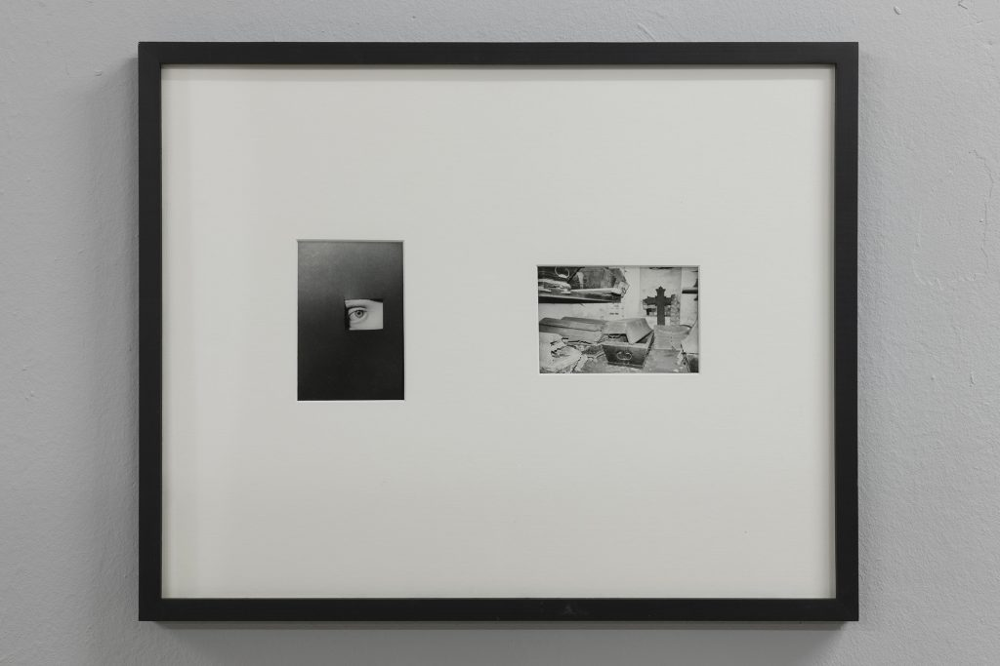
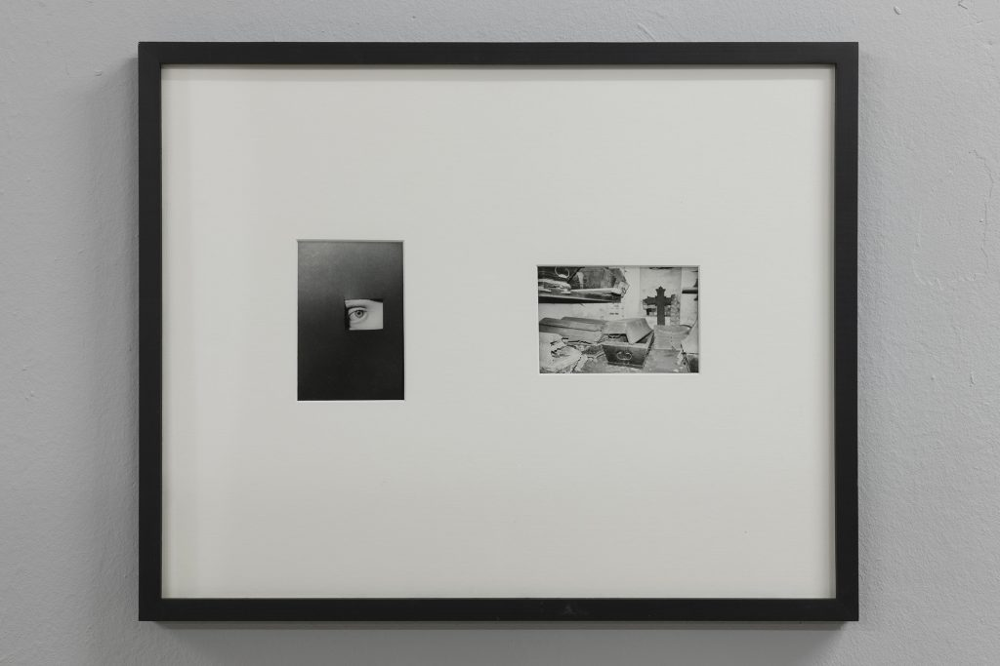

1959 born a strong eight-pounder
A miner’s son
Moved to Berlin in 1979 – jobs as chef/barkeeper/lover/prostitute/occasional worker
Since 1980 first steps towards the beaux-arts poetry/music/film/performance
1984 sensual acquisition of an immune deficiency
Since 1985 self-taught photographic artist
Since 1989 full (clinical) picture, or rather: never put off till tomorrow what you can do today.
Hover is an exhibition of ten pairs of silver gelatin photographs by German artist, musician, poet, performer and activist Jürgen Baldiga. The images on display printed by the artist are pulled from his short but incredibly prolific eight year photographic career, starting in 1985, a year after his diagnosis of ‘an immune deficiency’ (HIV), and before his untimely death at the age of 34 in 1993 when he decided to end his own life because his recovery from AIDS was hopeless. Ranging from snapshots to staged portraits, the views are quotidian in that they document and preserve people and moments from his daily life and social scene: friends, lovers, strangers passing on the street, Berlin’s drag and music communities; depicting moments of intimacy, desire and tenderness, hospital stays, holidays; states of joy, longing, loss, and pain, all set against the social-political backdrop of German reunification.
This exhibition offers a mere glimpse into a rich archive of thousands more of his images, most of which are stored in the archive at The Schwules Museum, Berlin. These diptychs were originally compiled and paired by Baldiga for an artist’s book which served as a way to reflect and draw correlations. They stood out as a more direct line of communication with the artist in that there was a logic of relations set out through the action of pairing that gave insight into the way he saw and thought beyond the singular isolated picture.
Much has been written about photography’s relation to mortality from Barthes studium and punctum to Sontag’s discussion of the memento mori. There is a presupposition that Baldiga’s choice to begin photographing after receiving a fatal diagnosis was an attempt to grasp and make permanent something fleeting, a way of extending an otherwise inevitable process of disintegration.
Very special thanks to Aron Neubert and The Schwules Museum, Berlin.
*Bio written by the artist in 1992
Clockwise from entrance:
(All works are on loan from SMU Berlin courtesy of Aron Neubert)
Jürgen Baldiga
Juergen (as Amor) / Man with Prosthesis 1991 / 1991
Gelatin silver print
8 x 12 cm (52 x 42 cm framed)
Jürgen Baldiga
Eros (Sperm) / Youth (during Sex)
1986-87 / circa 1986
Gelatin silver print
8 x 12 cm (52 x 42 cm framed)
Jürgen Baldiga
Michael (in Corin) / BeV Stroganoff
1992 / 1992
Gelatin silver print
8 x 12 cm (52 x 42 cm framed)
Jürgen Baldiga
Ikarus / Michael (in Corin)
1992 / 1992
Gelatin silver print
8 x 12 cm (52 x 42 cm framed)
Jürgen Baldiga
Condom / Amor with hand Grenade
1990 / 1990
Gelatin silver print
8 x 12 cm (52 x 42 cm framed)
Jürgen Baldiga
Self portrait / Coffins
1991 / 1989
Gelatin silver print
8 x 12 cm (52 x 42 cm framed)
Jürgen Baldiga
Wife of Dr. Gedaechtnisk. / Mrs. Schmidt
Circa 1985 / 1987
Gelatin silver print
8 x 12 cm (52 x 42 cm framed)
Jürgen Baldiga
Military Parade / Self Portrait (as cook)
Circa 1986 / 1988
Gelatin silver print
8 x 12 cm (52 x 42 cm framed)
Jürgen Baldiga
Eros / Testicles
1985-86 / 1985-86
Gelatin silver print
8 x 12 cm (52 x 42 cm framed)
Jürgen Baldiga
Burning Brain / Self Portrait (welded eye)
Circa 1991 / 1990
Gelatin silver print
8 x 12 cm (52 x 42 cm framed)
1959 born a strong eight-pounder
A miner’s son
Moved to Berlin in 1979 – jobs as chef/barkeeper/lover/prostitute/occasional worker
Since 1980 first steps towards the beaux-arts poetry/music/film/performance
1984 sensual acquisition of an immune deficiency
Since 1985 self-taught photographic artist
Since 1989 full (clinical) picture, or rather: never put off till tomorrow what you can do today.
Hover es una exposición de diez pares de fotografías en gelatina de plata, del artista músico, poeta, intérprete y activista alemán Jürgen Baldiga. Las imágenes que se exponen, impresas por el artista, proceden de su corta pero increíblemente prolífica carrera fotográfica de ocho años, que comenzó en 1985, un año después de que se le diagnosticara una "inmunodeficiencia" (VIH), y antes de su prematura muerte, a los 34 años, en 1993, cuando decidió poner fin a su propia vida porque su recuperación del sida era irremediable. Desde instantáneas hasta retratos escenificados, desde una visión cotidiana, documentan y conservan personas y momentos de su dia a dia y su escena social: amigos, amantes, desconocidos que se cruzan por la calle, las comunidades drag y músicos de Berlín; representando momentos de intimidad, deseo y ternura, estancias en el hospital, vacaciones; estados de alegría, anhelo, pérdida y dolor, todo ello con el telón de fondo sociopolítico de la reunificación alemana.
Esta exposición ofrece un solo fragmento de un rico archivo de miles de imágenes, la mayoría de las cuales se conservan en el archivo del Museo Schwules de Berlín. Estos dípticos fueron originalmente recopilados y emparejados por Baldiga para un libro y sirvieron para reflexionar y establecer correlaciones. Se trataba de una línea de comunicación más directa con el artista, ya que existía una lógica en las relaciones establecidas a través de la acción de aparejar que permitía comprender su forma de ver y pensar más allá de la singular imagen aislada.
Se ha escrito mucho sobre la relación de la fotografía con la mortalidad, desde el studium y el punctum de Barthes hasta la discusión de Sontag sobre el memento mori. Se presupone que la decisión de Baldiga de empezar a fotografiar tras recibir un diagnóstico mortal fue un intento de captar y hacer permanente algo fugaz, una forma de prolongar un proceso de desintegración que de otro modo sería inevitable.
Un agradecimiento muy especial a Aron Nuebert y The Schwules Museum, Berlin.
Jürgen Baldiga
Eros (Sperm) / Youth (during Sex)
1986-87 / circa 1986 : 2021
Two gelatin silver prints
8 x 12 cm each (52 x 42 cm framed together)
Edition of 10
2,200 Euro
Jürgen Baldiga
Michael (in Corin) / BeV Stroganoff
1992 / 1992 : 2021
Two gelatin silver prints
8 x 12 cm each (52 x 42 cm framed together)
Edition of 10
2,200 Euro
Jürgen Baldiga
Ikarus / Michael (in Corin)
1992 / 1992 : 2021
Two gelatin silver prints
8 x 12 cm each (52 x 42 cm framed together)
Edition of 10
2,200 Euro
Jürgen Baldiga
Condom / Amor with hand Grenade
1990 / 1990 : 2021
Two gelatin silver prints
8 x 12 cm each (52 x 42 cm framed together)
Edition of 10
2,200 Euro
Jürgen Baldiga
Self portrait / Coffins
1991 / 1989 : 2021
Two gelatin silver prints
8 x 12 cm each (52 x 42 cm framed together)
Edition of 10
2,200 Euro
Jürgen Baldiga
Wife of Dr. Gedaechtnisk. / Mrs. Schmidt
Circa 1985 / 1987 : 2021
Two gelatin silver prints
8 x 12 cm each (52 x 42 cm framed together)
Edition of 10
2,200 Euro
Jürgen Baldiga
Military Parade / Self Portrait (as cook)
Circa 1986 / 1988 : 2021
Two gelatin silver prints
8 x 12 cm each (52 x 42 cm framed together)
Edition of 10
2,200 Euro
Jürgen Baldiga
Eros / Testicles
1985-86 / 1985-86 : 2021
Two gelatin silver prints
8 x 12 cm each (52 x 42 cm framed together)
Edition of 10
2,200 Euro
Jürgen Baldiga
Burning Brain / Self Portrait (welded eye)
Circa 1991 / 1990 : 2021
Two gelatin silver prints
8 x 12 cm each (52 x 42 cm framed together)
Edition of 10
2,200 Euro
1959 born a strong eight-pounder
A miner’s son
Moved to Berlin in 1979 – jobs as chef/barkeeper/lover/prostitute/occasional worker
Since 1980 first steps towards the beaux-arts poetry/music/film/performance
1984 sensual acquisition of an immune deficiency
Since 1985 self-taught photographic artist
Since 1989 full (clinical) picture, or rather: never put off till tomorrow what you can do today.
Hover és una exposició de deu parells de fotografies en gelatina de plata, de l'artista músic, poeta, intèrpret i activista alemany Jürgen Baldiga. Les imatges que s'exposen, impreses per l'artista, procedeixen de la seva tala però increïblement prolífica carrera fotogràfica de vuit anys, que va començar en 1985, un any després que se li diagnostiqués una "immunodeficiència" (VIH), i abans de la seva prematura mort als 34 anys, al 1993, quan va decidir posar fi a la seva pròpia vida perquè la seva recuperació de la sida era irremeiable. Des d'instantànies fins a retrats escenificats, des d'una visió quotidiana, documenten i conserven persones i moments del seu dia a dia i la seva escena social: amics, amants, desconeguts que es travessen pel carrer, les comunitats drag i músics de Berlín; representant moments d'intimitat, desig i tendresa, estades a l'hospital, vacances; estats d'alegria, anhel, pèrdua i dolor, tot això amb el teló de fons sociopolític de la reunificació alemanya.
Aquesta exposició ofereix un sol fragment d'un ric arxiu de milers d'imatges, la majoria de les quals es conserven en l'arxiu del Museu Schwules de Berlín. Aquests díptics van ser originalment recopilats i aparellats per Baldiga per a un llibre i van servir per a reflexionar i establir correlacions. Es tractava d'una línia de comunicació més directa amb l'artista, ja que existia una lògica en les relacions establertes a través de l'acció d'aparellar que permetia comprendre la seva manera de veure i pensar més enllà de la singular imatge aïllada.
S'ha escrit molt de sobre la relació de la fotografia amb la mortalitat, des del studium i el punctum de Barthes fins a la discussió de Sontag sobre el memento mori. Es pressuposa que la decisió de Baldiga de començar a fotografiar després de rebre un diagnòstic mortal va ser un intent de captar i fer permanent una cosa fugaç, una manera de prolongar un procés de desintegració que d'una altra manera seria inevitable.
Un agraïment molt especial a Aron Nuebert i The Schwules Museum, Berlin.
En el sentit de les agulles del rellotge des de l'entrada:
(Totes les obres són un préstec de la SMU de Berlín per cortesia de Aron Neubert):
Jürgen Baldiga
Juergen (as Amor) / Man with Prosthesis 1991 / 1991
Gelatin silver print
8 x 12 cm (52 x 42 cm framed)
Jürgen Baldiga
Eros (Sperm) / Youth (during Sex)
1986-87 / circa 1986
Gelatin silver print
8 x 12 cm (52 x 42 cm framed)
Jürgen Baldiga
Michael (in Corin) / BeV Stroganoff
1992 / 1992
Gelatin silver print
8 x 12 cm (52 x 42 cm framed)
Jürgen Baldiga
Ikarus / Michael (in Corin)
1992 / 1992
Gelatin silver print
8 x 12 cm (52 x 42 cm framed)
Jürgen Baldiga
Condom / Amor with hand Grenade
1990 / 1990
Gelatin silver print
8 x 12 cm (52 x 42 cm framed)
Jürgen Baldiga
Self portrait / Coffins
1991 / 1989
Gelatin silver print
8 x 12 cm (52 x 42 cm framed)
Jürgen Baldiga
Wife of Dr. Gedaechtnisk. / Mrs. Schmidt
Circa 1985 / 1987
Gelatin silver print
8 x 12 cm (52 x 42 cm framed)
Jürgen Baldiga
Military Parade / Self Portrait (as cook)
Circa 1986 / 1988
Gelatin silver print
8 x 12 cm (52 x 42 cm framed)
Jürgen Baldiga
Eros / Testicles
1985-86 / 1985-86
Gelatin silver print
8 x 12 cm (52 x 42 cm framed)
Jürgen Baldiga
Burning Brain / Self Portrait (welded eye)
Circa 1991 / 1990
Gelatin silver print
8 x 12 cm (52 x 42 cm framed)
 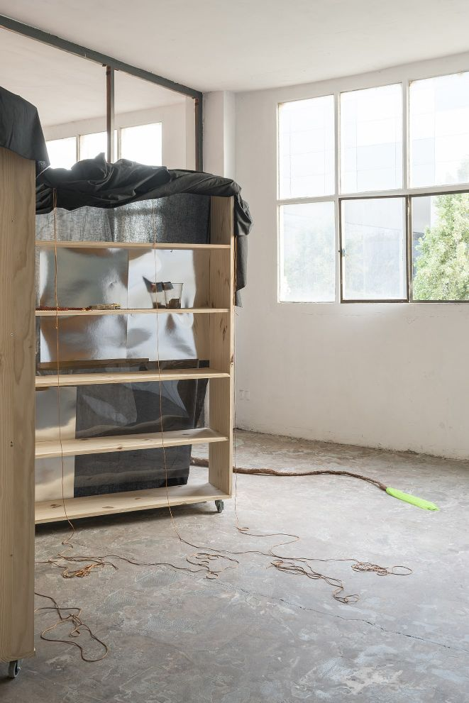
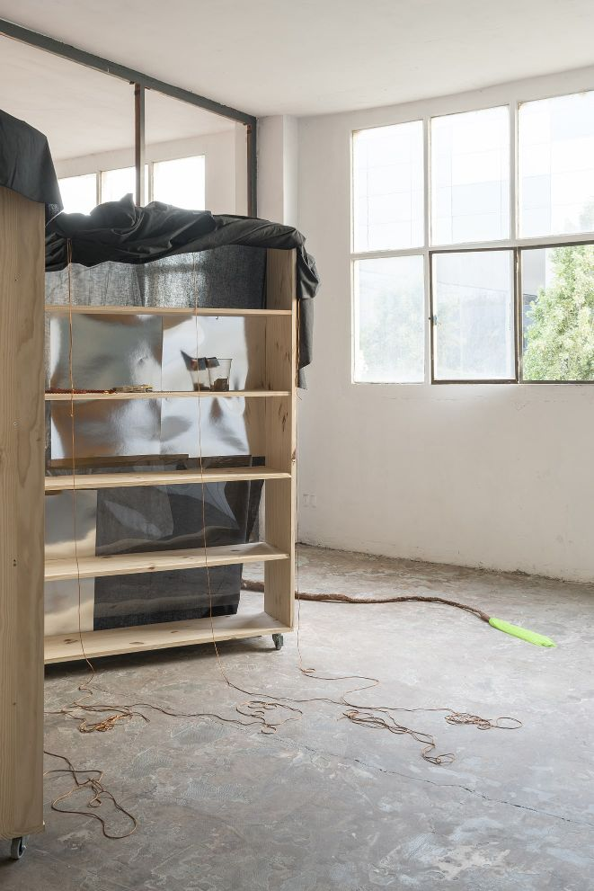
You were my sun, you were my earth
tail
prayer beads
hat
chef’s kiss
Don’t ever talk about my husband!
financial mistake
mirror
COMB-THRU
Degenerate cult of neurotic egomaniacs
gingham
Many difficult, mostly divorced
last night’s cigarettes
Kathy would have my back, like a real sister
stitch
prosecco
The damage is done, so I guess I be leaving
--
*This exhibition was generously supported by Pro Helvetia
You were my sun, you were my earth
rabo
abalorio de oración
sombrero
beso del chef
Don’t ever talk about my husband!
error financiero
espejo
COMB-THRU
Degenerate cult of neurotic egomaniacs
guingán
Many difficult, mostly divorced
cigarrillos de anoche
Kathy would have my back, like a real sister
Punto
prosecco
The damage is done, so I guess I be leaving
--
*Esta exposición ha contado con el generoso apoyo de
You were my sun, you were my earth
cua
abaloris d'oració
barret
petó del xef
Don’t ever talk about my husband!
error financer
mirall
COMB-THRU
Degenerate cult of neurotic egomaniacs
guingán
Many difficult, mostly divorced
cigarretes d’ahir nit
Kathy would have my back, like a real sister
punt
prosecco
The damage is done, so I guess I be leaving
--
*Aquesta exposició ha comptat amb el generós suport de
For Lucera
Interior of a cavity that has been excavated from rock, with almost imperceivable edges. Several dozen meters from the entrance, the cavity opens up onto a large room, crossed by a ray of light that cuts through a hole. Sharp stalagmites, molded by drops of saliva, emerge from the floor. The drops form a small pool, a milky, calm body of water. Eggs of an unknown species appear on the shore. There are hatchlings a short distance away that seem to have emerged from them. There is no one to take care of them. Probably their protector has gone out in search of food, or meat. The environment shakes with the deafening cries of the young; any living creature dwelling near the cavity would surely hear them. Hours, days, weeks have passed, and no one has taken charge. They move around trying to find comfort in the cold scenery around them.
Interior of a cave has been converted into a battlefield base lair. The improvised furniture and sketches attest to a strange obsession, revealing that a human being lives here. The table with small miniatures approximating beings with thick necks describe a fixation for a specimen not yet seen, but sensed. The remains of weaponry assembled with rudimentary materials affirm a will to hunt, or perhaps to avoid being hunted, affirming a will to survive. The scene is echoed with latent threat. There is a single plate of leftover food. There are no companions. If she is hunting, she has no allies. It is clear whoever she is, she will fight to maintain her existence. There are flowers wilted by the passage of time. Hours, days, weeks have passed, and no one has taken charge.
Neither has returned in all this time.
-Julia Castelló y Ali A. Maderuelo
Para Lucera
Interior de una cavidad excavada en la roca, de la que apenas se puede intuir su final. A varias decenas de metros de la entrada, la cavidad se ensancha dando paso a una gran sala, atravesada por un rayo de luz que se abre paso por un agujero. Las gotas se convierten aquí en un pequeño charco, una masa de agua lechosa y calmada. En la orilla aparecen huevos de gran tamaño de una especie desconocida. A poca distancia, crías que parecen haber surgido de ellos. No hay nadie que se haga cargo de ellas. Probablemente, la progenitora ha salido en busca de alimento, de carne. Los gritos ensordecedores de los cachorros, esperando a ser provistos de algún tipo de nutriente, estremecen el entorno y, si algún ser vivo está cerca de esa cavidad, seguro los escucha. Han pasado horas, días, semanas, y nadie se hace cargo. Se mueven buscando comodidad en el frío escenario que les rodea.
Interior de una cueva convertida en guarida y base de campo de batalla. Es sombría y tensa pero extrañamente acogedora. Los muebles improvisados y los bosquejos, testimonio de una obsesión, descubren que aquí habita un ser humano. La mesa con pequeñas miniaturas representando seres de cuello grueso confiesa una fijación por un especimen que nunca ha visto, pero intuido. Los restos de armamento ensamblado con materiales rudimentarios afirman una voluntad de cazar. Quizá de evitar ser cazada; una determinación por sobrevivir. Ecos de una amenaza latente invaden la escena. Un solo plato con restos de comida. No hay acompañantes. Si está de caza, no tiene aliados. Residuos de una catástrofe y una superviviente. Queda patente que, sea quien sea, va a luchar por reafirmar su existencia. Flores arrugadas por el paso del tiempo. Han pasado horas, días, semanas, y nadie se ha hecho cargo.
Ninguna de las dos ha vuelto en todo este tiempo.
-Julia Castelló y Ali A. Maderuelo
Per a Lucera
L'interior d'una cavitat cavada en la roca, de la que a penes es pot intuir el seu final. A diverses desenes de metres de l'entrada, la cavitat s'eixampla donant pas a una gran sala, travessada per un raig de llum que s'obre pas per un forat. Les gotes es converteixen aquí en un petit toll que desemboca en una massa d'aigua lletosa i calmada. En la riba apareixen ous grans d'una espècie desconeguda. A poca distància, cries que semblen haver sorgit d'ells. No hi ha ningú que es faci càrrec d'elles. Probablement, la progenitora ha sortit a la recerca d'aliment, de carn. Els crits eixordadors dels cadells esperant a ser proveïts d'alguna mena de nutrient, estremeixen l'entorn i, si algun ésser viu està prop d'aquesta cavitat, segur els escolta. Han passat hores, dies, setmanes, i ningú se'n fa càrrec. Es mouen buscant comoditat en el fred escenari que els envolta.
L'interior d'una cova convertida en cau i base de camp de batalla. És ombrívola i tibant però estranyament acollidora. Els mobles improvisats i els esbossos, testimoni d'una obsessió, descobreixen que aquí habita un ésser humà. La taula amb petites miniatures representant éssers de coll gruix confessa una fixació per un espècimen que mai ha vist, però si intuït. Les restes d'armament acoblat amb materials rudimentaris afirmen una voluntat de caçar. Potser, evitar ser caçada; una determinació per sobreviure. Ressons d'una amenaça latent envaeixen l'escena. Un sol plat amb restes de menjar. No hi ha acompanyants. Si està de caça, no té aliats. Residus d'una catàstrofe i una supervivent. Queda patent que, sigui qui sigui, lluitarà per reafirmar la seva existència. Flors arrugades pel pas del temps. Han passat hores, dies, setmanes, i ningú se n'ha fet càrrec.
Cap de les dues ha tornat en tot aquest temps.
-Julia Castelló and Ali A. Maderuelo

Kudzu is a parasitic plant species, native to Asia but invasive to North America and Europe. The plant was brought intentionally to North America in the late 1800s for its aesthetic qualities and agricultural dexterity. The leafy green vine blooms with sweet smelling purple flowers and was originally marketed as an ornamental way to shade porches and later was used industrially, as a cover plant preventing soil erosion, and as high-protein cattle fodder.
In the south eastern United States, the plant grew exceptionally well, due to the parallels in humidity and heat levels to its native climate. Since its original introduction into the region Kudzu has proliferated exponentially, creeping well beyond its intended purposes. Now it forms a quintessential part of the landscape and the folklore of the ‘American South’.
Kudzu essentially smothers all other plant life and rather than supporting itself, grows on top of other objects — plants, infrastructure, powerlines, building etc. — to reach light. It can grow at about 30 centimeters per day in direct sunlight. The plant is also stress-tolerant and survives adverse climates with very low nitrogen levels. The only way to kill it for good is to burn it.
For the installation in ‘Studio Parasite,’ one of artist’s many works centering the vine, Dean designed two seedbeds, into which Kudzu sproutlings were recently transplanted, grown from seeds leading up to the exhibition's opening. The wooden planters are encased in plexiglass cubes to prevent spore dispersion into the local ecosystem and positioned under grow lights, most commonly associated with the growth of marijuana. The plant will have a hyperconcentrated period of growth throughout the course of the exhibition timed for the start of spring with continuous access to light, natural through the windows and artificial from the lights. The plants grow until the final week of the show, and are then burned; roots, soil planter and all. The ashes are placed back into the plexiglass cubes turned upright and shipped back to the artist to form a new series of sculptures.
The exhibition creates a parasitic system without a host — or if there is a host, it is the white cube. The system that the exhibition starts up models something similar to art, or a studio practice, cycling and recycling ideas and materials — but it models art as a structural parasite, necessarily territorializing everything around it to keep itself alive. Though here, the parasite is, again, physically without a host. On the other hand, Dean’s interest in Kudzu lies in its potential parallels to blackness, a return to her past inquiries around the ontology of blackness as a sort of viral force, a system of meaning capable of reproducing itself and its own meaning structures without any ontological core.
-----
The Kudzu thing started as yet another joke in a way — or no, it was quite serious, when I was trying to write the play for the Hammer and thinking about the South. I was trying very hard to visualize an abandoned plantation and remembered my grandmother —
Actually no, I went to give a talk in Atlanta in August 2019, and I hadn’t been there in a number of years. I used to visit my Abuela there every summer with my younger brother. I did my talk and then spent a few nights in Decatur at her house. She drives but really shouldn’t anymore, so I spent much of the time shuttling her around in her little KIA–the bank, the supermarket, visiting my cousin at my Aunt’s house.
I’d forgotten that a huge part of our routine had always been her pointing out things that are weird about Atlanta. Being from New Jersey herself and having lived in New York City most of her adult life, Atlanta is a foreign territory and she likes to keep it that way. As we tooled around, she provided her running commentary on such topics as: the way they say “see-cement” when talking about cement, “in-shurns” for “insurance.” Visually: the red clay that sits under everything, and the Kudzu that barricades the forests from view and creeps over anything that it can attach itself to.
I made a whole show using red clay a few years ago, that became — in part — about how I’d made an assumption and actually in the South a lot of the soil is a regular brown. The red clay is pretty spottily distributed throughout the region. Culturally, though, there’s all this stuff about “the red clay.” I like these things; the unreality of American cultural identity and geographic imaginaries. Kudzu is another beloved trope of the American South. Flannery O’Connor, Toni Morrison, all these writers who take on the South — you find them talking about “kudzu curling up the rotting shingles…” “the shadowy form of the kudzu vines choking out the trees…”
You also see it in apocalyptic imagery. Because, if left to its own devices, Kudzu will simply overtake everything, is the idea. Kudzu — rampant, aggressive, unstoppable. And when it does, it slips over things, taking on their form. Sort of a botanical changeling, virus, slime, one of those parasites that commandeers its host, its only goal to continue to propagate itself. Maybe this is a bad analogy, maybe it's actually just more like a leafy crust.
The funny thing is that the scientific community is embroiled in an ongoing debate about whether Kudzu is actually so powerful. All this lore about choking out ecosystems — which has led to the plant being a highly controlled substance in most countries — is undermined by the fact that often Kudzu only seems to grow at an alarming rate in direct sunlight. Once you enter a forest, it quickly fades. A threat, but an empty one.
Months after that trip, I tried to get a few people I know in Atlanta to send me cuttings. They were all spooked by the request. I am generally not a pushy personality, so I didn’t argue that the department of agriculture probably wasn’t too worried about us. I also asked my cousins and they were kind of like I don’t know what you’re talking about. I eventually found some seeds on eBay and had to order them from Russia using a VPN.
The idea, then, was to plant a bunch of seeds in a variety of locations. Whatever exhibition offers came, I’d suggest roping the show into this network of sleeper cells, where we’d grow this plant, do a show vacated of all content. Simply process, and whatever desired meaning could be projected onto it by the institution and the viewer. I had my thoughts about blackness — the ecological threat stuff was not that interesting to me in this respect, more the image of threat (the threat imaginary?) It was mostly the fact that something could easily overtake everything in its path, doing nothing to change other objects’ cellular, molecular make up in the process, but still tangling everything up in itself. A virus, a slime, a parasite that commandeers its host. I realize now this is a bad analogy, yes, because blackness does rework the internal composition of things it touches in a way. If we’re talking about the right blackness (blackness not Blackness?) Kudzu’s life is as an aesthetic object, its being a structural one. Blackness’ life, sadly, is most often as an aesthetic object, but its being: a structural one. Yes, that’s it.
As such, in my little cells, the plant would grow and offer nothing but its growth, and in order to do anything other than be would need to be propped up by whatever mental structures you placed in its way.
Some other stuff happened, time passed. I wanted to make all these sleeper cells. Grow it. Burn it. Turn it into actual objects by mingling it with other materials (we’ll see how that goes when and if it ever goes). Almost got one set up in Pasadena at the Huntington (for whatever reason they were nearly willing to risk a small, but potent ecological disaster on their grounds. For the love of the game!) Almost one in Switzerland. Thought about repatriating the project to East Asia. I accidentally left one of my VPN seeds in a park in the West Village, in a shallow hole that I dug. My studio assistant Sam and I started to set some up here in New York with the helpful advice of Marisa at Pioneerworks. Sam took some of my VPN seeds home and tried with those to no avail. Then, using an app, he found a field of Kudzu in Bushwick; it had taken over a baseball field down the block from his house. He also went to an abandoned railroad track in Midwood in the dead of night to get some cuttings. None of them took, and they all died in our respective apartments within days as winter approached.
Cory is the only one who has had any luck. I tried the process he used, germinating the seeds and shoving sunlight down their throats, but nothing happened. I suppose the seeds like Barcelona and Cory.
The whole thing started with this idea of wanting to model an artistic practice. Not just cynically skewering art in the 21st century’s inability to make a case for its own existence (parasitic on the back of politics, history, identity, biography, and so on), but paralleling the process of pollination, shifting ideas and materials across forms and mediums. We were going to — we will? — take half of the ashes from the Barcelona batch and make new composite planters for a new batch to grow somewhere else, and the other half will be incorporated into raw material for “artworks.” These artworks would/will model some abject excess, accursed share, surplus value — I’m just saying words now. Really maybe just mean deadened capital. Dead plants. Dead capital. Once lively organic forces, now embalmed in materials and forms.
There’s that Robert Morris piece, box with a sound of its own making. It’s a perfectly closed loop, in my opinion. The box is the piece is the making of the piece, the box. A perfectly self-referential, material loop, with an actual sonic loop enclosed. I guess Studio Parasite (at one point titled Bad Infinity, a sloppy reference to Hegel that I’m still working through) is my attempt at looping myself through this proxy object, the kudzu, with the knowledge that I can never be hermetically sealed. More importantly, with the knowledge that that cannot be the goal. In retrospect, the whole project was a big excuse to get across the gulf between previously seemingly analytical, minimalist works and back to expression — though always shooting with a Minimalist historical and conceptual lens. Maybe Studio Parasite doesn’t quite need to exist any more; in some ways sitting alone at home for close to a year performed the same operation, punting me back into play, and accidentally restoring the boundary between Art and art. But the great thing about Art and art is that it never needs to exist, but it does need to be a certain way (that only you (I) can know).
There is a lot more to say, but that’s always the case.
l kudzu es una especie de planta parásita, originaria de Asia pero invasora en Norteamérica y Europa. La planta fue traída intencionadamente a Norteamérica a finales del siglo XIX por sus cualidades estéticas y su destreza agrícola. La enredadera de hojas verdes florece con flores púrpuras de olor dulce y se comercializó originalmente como una forma ornamental de dar sombra a los porches y más tarde se utilizó industrialmente, como planta de cobertura que evita la erosión del suelo y como forraje para el ganado con alto contenido proteínico.
En el sureste de Estados Unidos, la planta crecía excepcionalmente bien, debido a los niveles de humedad y calor paralelos a los de su clima nativo. Desde su introducción original en la región, el kudzu ha proliferado de forma exponencial, yendo mucho más allá de sus fines previstos. Ahora forma parte por excelencia del paisaje y del folclore del "sur americano".
El kudzu asfixia esencialmente al resto de la vida vegetal y, en lugar de sostenerse por sí mismo, crece encima de otros objetos -plantas, infraestructuras, tendidos eléctricos, edificios, etc.- para alcanzar la luz. Puede crecer unos 30 centímetros al día con luz solar directa. La planta también es tolerante al estrés y sobrevive a climas adversos con niveles muy bajos de nitrógeno. La única manera de matarla definitivamente es quemándola.
Para la instalación en "Studio Parasite", una de las muchas obras del artista centradas en la vid, Dean diseñó dos semilleros, en los que se trasplantaron brotes de Kudzu recientemente, cultivados a partir de semillas antes de la inauguración de la exposición. Los semilleros de madera están encerrados en cubos de plexiglás para evitar la dispersión de las esporas en el ecosistema local y colocados bajo luces de cultivo, más comúnmente asociadas al crecimiento de la marihuana. La planta tendrá un periodo de crecimiento hiperconcentrado durante el transcurso de la exposición, programado para el inicio de la primavera, con acceso continuo a la luz, natural a través de las ventanas y artificial de las luces. Las plantas crecen hasta la última semana de la exposición, y entonces se queman; raíces, maceta de tierra y todo. Las cenizas se vuelven a colocar en los cubos de plexiglás puestos en posición vertical y se envían de nuevo al artista para formar una nueva serie de esculturas.
La exposición crea un sistema parasitario sin huésped, o si hay un huésped, es el cubo blanco. El sistema que la exposición pone en marcha es algo parecido al arte, o a la práctica de un estudio, que recicla e intercambia ideas y materiales, pero el arte es un parásito estructural que necesariamente territorializa todo lo que le rodea para mantenerse vivo. Aunque en este caso, el parásito está, de nuevo, físicamente sin anfitrión. Por otra parte, el interés de Dean en Kudzu radica en su potencial paralelismo con la negritud, un retorno a sus investigaciones pasadas en torno a la ontología de la negritud como una especie de fuerza viral, un sistema de significado capaz de reproducirse a sí mismo y a sus propias estructuras de significado sin ningún núcleo ontológico.
-----
Lo del Kudzu empezó como una broma más en cierto modo -o no, era bastante serio-, cuando intentaba escribir la obra para la Hammer y pensaba en el Sur. Me esforzaba por visualizar una plantación abandonada y recordaba a mi abuela -
En realidad no, fui a dar una charla a Atlanta en agosto de 2019, y no había estado allí en varios años. Solía visitar a mi Abuela allí cada verano con mi hermano pequeño. Hice mi charla y luego pasé unas noches en Decatur en su casa. Ella conduce, pero realmente ya no debe hacerlo, así que pasé gran parte del tiempo llevándola de un lado a otro en su pequeño KIA: al banco, al supermercado, a visitar a mi primo en casa de mi tía.
Había olvidado que una gran parte de nuestra rutina había sido siempre ella señalando las cosas raras de Atlanta. Siendo ella misma de Nueva Jersey y habiendo vivido en Nueva York la mayor parte de su vida adulta, Atlanta es un territorio extraño y le gusta mantenerlo así. Mientras paseábamos, nos hizo comentarios sobre temas como: la forma en que se dice "see-cement" cuando se habla de cemento, "in-shurns" para "insurance". Visualmente: la arcilla roja que se encuentra debajo de todo, y el Kudzu que impide la visión de los bosques y se arrastra sobre cualquier cosa a la que pueda adherirse.
Hace unos años hice todo un programa con arcilla roja, que se convirtió -en parte- en una suposición y en realidad en el Sur gran parte del suelo es de color marrón normal. La arcilla roja está distribuida de forma bastante irregular por toda la región. Sin embargo, culturalmente, hay todo este asunto de "la arcilla roja". Me gustan estas cosas; la irrealidad de la identidad cultural americana y los imaginarios geográficos. El kudzu es otro tropo muy querido del Sur de Estados Unidos. Flannery O'Connor, Toni Morrison, todos esos escritores que se ocupan del Sur, los encuentras hablando de "kudzu enroscándose en las tejas podridas..." "la forma sombría de las vides de kudzu que ahogan los árboles..."
También se ve en las imágenes apocalípticas. Porque, si se le deja a su aire, el Kudzu simplemente se apoderará de todo, es la idea. Kudzu - desenfrenado, agresivo, imparable. Y cuando lo hace, se desliza sobre las cosas, tomando su forma. Es una especie de mutante botánico, un virus, una baba, uno de esos parásitos que se apoderan de su huésped, con el único objetivo de seguir propagándose. Quizá sea una mala analogía, quizá se parezca más a una corteza de hojas.
Lo curioso es que la comunidad científica está inmersa en un debate permanente sobre si el Kudzu es realmente tan poderoso. Toda esta leyenda sobre la asfixia de los ecosistemas -que ha llevado a la planta a ser una sustancia muy controlada en la mayoría de los países- se ve socavada por el hecho de que a menudo el Kudzu sólo parece crecer a un ritmo alarmante bajo la luz directa del sol. Una vez que entra en un bosque, se desvanece rápidamente. Una amenaza, pero vacía.
Meses después de aquel viaje, intenté que algunos conocidos de Atlanta me enviaran esquejes. A todos les asustó la petición. Por lo general, no tengo una personalidad prepotente, así que no discutí que el departamento de agricultura probablemente no estaba demasiado preocupado por nosotros. También pregunté a mis primos y se quedaron como si no supieran de qué estás hablando. Al final encontré algunas semillas en eBay y tuve que pedirlas a Rusia utilizando una VPN.
La idea, entonces, era plantar un montón de semillas en diversos lugares. En cualquier oferta de exhibición que llegara, sugeriría que el espectáculo se incluyera en esta red de células durmientes, donde cultivaríamos esta planta, haríamos un espectáculo desprovisto de todo contenido. Simplemente el proceso, y cualquier significado deseado podría ser proyectado en él por la institución y el espectador. Tenía mis pensamientos acerca de la negrura: el tema de la amenaza ecológica no me interesaba tanto en este sentido, sino más bien la imagen de la amenaza (¿el imaginario de la amenaza?) Era sobre todo el hecho de que algo pudiera fácilmente superar todo a su paso, sin hacer nada para cambiar la composición celular y molecular de otros objetos en el proceso, pero aún así enredando todo en sí mismo. Un virus, un limo, un parásito que se apodera de su huésped. Ahora me doy cuenta de que es una mala analogía, sí, porque la negrura sí modifica la composición interna de las cosas que toca en cierto modo. Si hablamos de la negritud correcta (¿negritud no?) la vida de Kudzu es como objeto estético, su ser es estructural. La vida de la negritud, por desgracia, es la mayoría de las veces como objeto estético, pero su ser: estructural. Sí, eso es.
Como tal, en mis pequeñas células, la planta crecería y no ofrecería nada más que su crecimiento, y para hacer otra cosa que ser necesitaría ser apuntalada por cualquier estructura mental que colocara en su camino.
Pasaron otras cosas, pasó el tiempo. Quería hacer todas estas células durmientes. Hacerlas crecer. Quemarlas. Convertirlo en objetos reales mezclándolo con otros materiales (ya veremos cómo va eso cuando y si alguna vez va). Casi conseguimos montar uno en Pasadena, en el Huntington (por la razón que sea, casi estaban dispuestos a arriesgarse a un pequeño pero potente desastre ecológico en sus terrenos. Por amor al juego). Casi uno en Suiza. Pensé en repatriar el proyecto a Asia Oriental. Accidentalmente dejé una de mis semillas VPN en un parque del West Village, en un agujero poco profundo que cavé. Mi ayudante de estudio, Sam, y yo empezamos a instalar algunas aquí en Nueva York, con los útiles consejos de Marisa de Pioneerworks. Sam se llevó a casa algunas de mis semillas VPN y lo intentó sin éxito. Luego, utilizando una aplicación, encontró un campo de Kudzu en Bushwick; se había apoderado de un campo de béisbol a una manzana de su casa. También fue a una vía de tren abandonada en Midwood en plena noche para conseguir algunos esquejes. Ninguno de ellos se llevó a cabo, y todos murieron en nuestros respectivos apartamentos a los pocos días, cuando se acercaba el invierno.
Cory es el único que ha tenido suerte. Intenté el proceso que él utilizó, germinando las semillas y metiéndoles la luz del sol en la garganta, pero no pasó nada. Supongo que a las semillas les gusta Barcelona y Cory.
Todo comenzó con esta idea de querer modelar una práctica artística. No se trata sólo de criticar cínicamente la incapacidad del arte del siglo XXI para justificar su propia existencia (parasitaria a costa de la política, la historia, la identidad, la biografía, etc.), sino de hacer un paralelismo con el proceso de polinización, cambiando las ideas y los materiales entre formas y medios. Íbamos a -¿vamos a? - tomar la mitad de las cenizas del lote de Barcelona y hacer nuevas macetas compuestas para un nuevo lote que crecerá en otro lugar, y la otra mitad se incorporará como materia prima para "obras de arte". Estas obras de arte modelarían/van a modelar algún exceso abyecto, cuota maldita, plusvalía -ahora sólo digo palabras. En realidad quizá sólo signifique capital muerto. Plantas muertas. Capital muerto. Fuerzas orgánicas antes vivas, ahora embalsamadas en materiales y formas.
Ahí está esa pieza de Robert Morris, caja con un sonido de su propia creación. Es un bucle perfectamente cerrado, en mi opinión. La caja es la pieza es la fabricación de la pieza, la caja. Un bucle material perfectamente autorreferencial, con un bucle sonoro real encerrado. Supongo que Studio Parasite (que en un momento dado se tituló Bad Infinity, una descuidada referencia a Hegel que todavía estoy trabajando) es mi intento de hacer un bucle de mí mismo a través de este objeto proxy, el kudzu, con el conocimiento de que nunca podré estar herméticamente cerrado. Y lo que es más importante, sabiendo que ese no puede ser el objetivo. En retrospectiva, todo el proyecto fue una gran excusa para atravesar el abismo entre los trabajos aparentemente analíticos y minimalistas anteriores y volver a la expresión, aunque siempre disparando con una lente histórica y conceptual minimalista. Tal vez Studio Parasite ya no necesite existir; en cierto modo, sentarse solo en casa durante casi un año ha realizado la misma operación, devolviéndome al juego, y restaurando accidentalmente la frontera entre el Arte y el arte. Pero lo bueno del Arte y del arte es que nunca tiene que existir, pero sí tiene que ser de una determinada manera (que sólo tú (yo) puedes conocer).
Hay mucho más que decir, pero siempre es así.
El kudzu és una espècie de planta paràsita, originària d'Àsia però invasora a Amèrica del Nord i Europa. La planta va ser portada intencionadament a Amèrica del Nord a la fi del segle XIX per les seves qualitats estètiques i la seva destresa agrícola. La planta enfiladissa de fulles verdes floreix amb flors porpres d'olor dolça i es va comercialitzar originalment com una forma ornamental de donar ombra als porxos i més tard es va utilitzar industrialment, com a planta de cobertura que evita l'erosió del sòl i com a farratge per al bestiar amb alt contingut proteínic.
En el sud-est dels Estats Units, la planta creixia excepcionalment bé, a causa dels nivells d'humitat i calor paral·lels als del seu clima natiu. Des de la seva introducció original a la regió, el kudzu ha proliferat de manera exponencial, anant molt més allà dels seus fins previstos. Ara forma part per excel·lència del paisatge i del folklore del "sud americà".
El kudzu asfíxia essencialment a la resta de la vida vegetal i, en lloc de sostenir-se per si mateix, creix damunt d'altres objectes -plantes, infraestructures, línies elèctriques, edificis, etc.- per a aconseguir la llum. Pot créixer uns 30 centímetres al dia amb llum solar directa. La planta també és tolerant a l'estrès i sobreviu a climes adversos amb nivells molt baixos de nitrogen. L'única manera de matar-la definitivament és cremant-la.
Per a la instal·lació en "Studio Parasite", una de les moltes obres de l'artista centrades en la vinya, Dean va dissenyar dos planters, en els quals es van trasplantar brots de Kudzu recentment, conreats a partir de llavors abans de la inauguració de l'exposició. Els planters de fusta estan tancats en galledes de plexiglás per a evitar la dispersió de les espores en l'ecosistema local i col·locats sota llums de cultiu, més comunament associades al creixement de la marihuana. La planta tindrà un període de creixement hiperconcentrado durant el transcurs de l'exposició, programat per a l'inici de la primavera, amb accés continu a la llum, natural a través de les finestres i artificial de les llums. Les plantes creixen fins a l'última setmana de l'exposició, i llavors es cremen; arrels, test de terra i tot. Les cendres es tornen a col·locar en les galledes de plexiglás llocs en posició vertical i s'envien de nou a l'artista per a formar una nova sèrie d'escultures.
L'exposició crea un sistema parasitari sense hoste, o si hi ha un hoste, és la galleda blanca. El sistema que l'exposició posa en marxa és alguna cosa semblança a l'art, o a la pràctica d'un estudi, que recicla i intercanvia idees i materials, però l'art és un paràsit estructural que necessàriament territorializa tot el que li envolta per a mantenir-se viu. Encara que en aquest cas, el paràsit està, de nou, físicament sense amfitrió. D'altra banda, l'interès de Dean en Kudzu radica en el seu potencial paral·lelisme amb la negritud, un retorn a les seves recerques passades entorn de l'ontologia de la negritud com una espècie de força viral, un sistema de significat capaç de reproduir-se a si mateix i a les seves pròpies estructures de significat sense cap nucli ontològic.
-----
Això del Kudzu va començar com una broma més en certa manera -o no, era bastant seriós-, quan intentava escriure l'obra per a la Hammer i pensava en el Sud. M'esforçava per visualitzar una plantació abandonada i recordava a la meva àvia -
En realitat no, vaig anar a donar una xerrada a Atlanta a l'agost de 2019, i no havia estat allí en diversos anys. Solia visitar a la meva Àvia allí cada estiu amb el meu germà petit. Vaig fer la meva xerrada i després vaig passar unes nits en Decatur a la seva casa. Ella condueix, però realment ja no ha de fer-ho, així que vaig passar gran part del temps portant-la d'un costat a un altre en el seu petit KIA: al banc, al supermercat, a visitar al meu cosí a casa de la meva tia.
Havia oblidat que una gran part de la nostra rutina havia estat sempre ella assenyalant les coses rares d'Atlanta. Sent ella mateixa de Nova Jersey i havent viscut a Nova York la major part de la seva vida adulta, Atlanta és un territori estrany i li agrada mantenir-lo així. Mentre passejàvem, ens va fer comentaris sobre temes com: la forma en què es diu "see-*cement" quan es parla de ciment, "in-*shurns" per a "insurance". Visualment: l'argila vermella que es troba sota tot, i el Kudzu que impedeix la visió dels boscos i s'arrossega sobre qualsevol cosa a la qual pugui adherir-se.
Fa uns anys vaig fer tot un programa amb argila vermella, que es va convertir -en part- en una suposició i en realitat al Sud gran part del sòl és de color marró normal. L'argila vermella està distribuïda de forma bastant irregular per tota la regió. No obstant això, culturalment, hi ha tot aquest assumpte de "l'argila vermella". M'agraden aquestes coses; la irrealitat de la identitat cultural americana i els imaginaris geogràfics. El kudzu és un altre tropo molt volgut del Sud dels Estats Units. Flannery O'Connor, Toni Morrison, tots aquests escriptors que s'ocupen del Sud, els trobes parlant de "kudzu enroscant-se en les teules podrides..." "la forma ombrívola de les vinyes de kudzu que ofeguen els arbres..."
També es veu en les imatges apocalíptiques. Perquè, si se li deixa al seu aire, el Kudzu simplement s'apoderarà de tot, és la idea. Kudzu - desenfrenat, agressiu, imparable. I quan ho fa, es llisca sobre les coses, prenent la seva forma. És una espècie de mutant botànic, un virus, una bava, un d'aquests paràsits que s'apoderen del seu hoste, amb l'únic objectiu de continuar propagant-se. Potser és una mala analogia, potser se sembla més a una escorça de fulles.
El curiós és que la comunitat científica està immersa en un debat permanent sobre si el Kudzu és realment tan poderós. Tota aquesta llegenda sobre l'asfíxia dels ecosistemes -que ha portat a la planta a ser una substància molt controlada en la majoria dels països- es veu soscavada pel fet que sovint el Kudzu només sembla créixer a un ritme alarmant sota la llum directa del sol. Una vegada que entra en un bosc, s'esvaeix ràpidament. Una amenaça, però buida.
Mesos després d'aquell viatge, vaig intentar que alguns coneguts d'Atlanta m'enviessin esqueixos. A tots els va espantar la petició. En general, no tinc una personalitat prepotent, així que no vaig discutir que el departament d'agricultura probablement no estava massa preocupat per nosaltres. També vaig preguntar als meus cosins i es van quedar com si no sabessin de què estàs parlant. Al final vaig trobar algunes llavors en eBay i vaig haver de demanar-les a Rússia utilitzant una VPN.
La idea, llavors, era plantar un munt de llavors en diversos llocs. En qualsevol oferta d'exhibició que arribés, suggeriria que l'espectacle s'inclogués en aquesta xarxa de cèl·lules dorments, on conrearíem aquesta planta, faríem un espectacle desproveït de tot contingut. Simplement el procés, i qualsevol significat desitjat podria ser projectat en ell per la institució i l'espectador. Tenia els meus pensaments sobre la negror: el tema de l'amenaça ecològica no m'interessava tant en aquest sentit, sinó més aviat la imatge de l'amenaça (l'imaginari de l'amenaça?) Era sobretot el fet que alguna cosa pogués fàcilment superar tot al seu pas, sense fer res per a canviar la composició cel·lular i molecular d'altres objectes en el procés, però encara així embullant tot en si mateix. Un virus, un llim, un paràsit que s'apodera del seu hoste. Ara m'adono que és una mala analogia, sí, perquè la negror sí que modifica la composició interna de les coses que toca en certa manera. Si parlem de la negritud correcta (negritud no?) la vida de Kudzu és com a objecte estètic, el seu ser és estructural. La vida de la negritud, per desgràcia, és la majoria de les vegades com a objecte estètic, però el seu ser: estructural. Sí, això és.
Com a tal, en les meves petites cèl·lules, la planta creixeria i no oferiria res més que el seu creixement, i per a fer una altra cosa que ser necessitaria ser apuntalada per qualsevol estructura mental que col·loqués en el seu camí.
Van passar altres coses, va passar el temps. Volia fer totes aquestes cèl·lules dorments. Fer-les créixer. Cremar-les. Convertir-ho en objectes reals barrejant-ho amb altres materials (ja veurem com va això quan i si alguna vegada va). Gairebé aconseguim muntar un en Pasadena, en el Huntington (per la raó que sigui, gairebé estaven disposats a arriscar-se a un petit però potent desastre ecològic en els seus terrenys. Per amor al joc). Gairebé un a Suïssa. Vaig pensar a repatriar el projecte a Àsia Oriental. Accidentalment vaig deixar una de les meves llavors VPN en un parc del West Village, en un forat poc profund que vaig cavar. El meu ajudant d'estudi, Sam, i jo comencem a instal·lar algunes aquí a Nova York, amb els útils consells de Marisa de Pioneerworks. Sam es va emportar a casa algunes de les meves llavors VPN i ho va intentar sense èxit. Després, utilitzant una aplicació, va trobar un camp de Kudzu en Bushwick; s'havia apoderat d'un camp de beisbol a una poma de la seva casa. També va ser a una via de tren abandonada en Midwood en plena nit per a aconseguir alguns esqueixos. Cap d'ells es va dur a terme, i tots van morir en els nostres respectius apartaments als pocs dies, quan s'acostava l'hivern.
Cory és l'únic que ha tingut sort. Vaig intentar el procés que ell va utilitzar, germinant les llavors i ficant-los la llum del sol en la gola, però no va passar res. Suposo que a les llavors els agrada Barcelona i Cory.
Tot va començar amb aquesta idea de voler modelar una pràctica artística. No es tracta només de criticar cínicament la incapacitat de l'art del segle XXI per a justificar la seva pròpia existència (parasitària a costa de la política, la història, la identitat, la biografia, etc.), sinó de fer un paral·lelisme amb el procés de pol·linització, canviant les idees i els materials entre formes i mitjans. Anàvem a -anem a? - prendre la meitat de les cendres del lot de Barcelona i fer nous tests composts per a un nou lot que creixerà en un altre lloc, i l'altra meitat s'incorporarà com a matèria primera per a "obres d'art". Aquestes obres d'art modelarien/modelaran algun excés abjecte, quota maleïda, plusvàlua -ara només dic paraules. En realitat potser només significa capital mort. Plantes mortes. Capital mort. Forces orgàniques abans vives, ara embalsamades en materials i formes.
Aquí està aquesta peça de Robert Morris, caixa amb un so de la seva pròpia creació. És un bucle perfectament tancat, al meu entendre. La caixa és la peça és la fabricació de la peça, la caixa. Un bucle material perfectament autoreferencial, amb un bucle sonor real tancat. Suposo que Studio Parasite (que en un moment donat es va titular Bad Infinity, una descurada referència a Hegel que encara estic treballant) és el meu intent de fer un bucle de mi mateix a través d'aquest objecte proxy, el kudzu, amb el coneixement que mai podré estar hermèticament tancat. I cosa que és més important, sabent que aquest no pot ser l'objectiu. En retrospectiva, tot el projecte va ser una gran excusa per a travessar l'abisme entre els treballs aparentment analítics i minimalistes anteriors i tornar a l'expressió, encara que sempre disparant amb una lent històrica i conceptual minimalista. Tal vegada Studio Parasite ja no necessita existir; en certa manera, asseure's només a casa durant gairebé un any ha realitzat la mateixa operació, retornant-me al joc, i restaurant accidentalment la frontera entre l'Art i l'art. Però el que té de bo l'Art i de l'art és que mai ha d'existir, però sí que ha de ser d'una determinada manera (que només tu (jo) pots conèixer).
Hi ha molt més que dir, però sempre és així.

 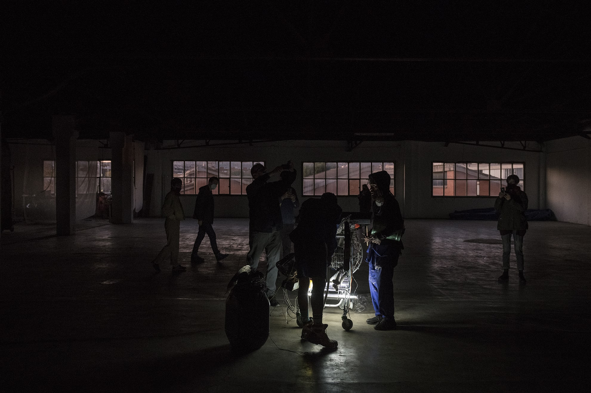
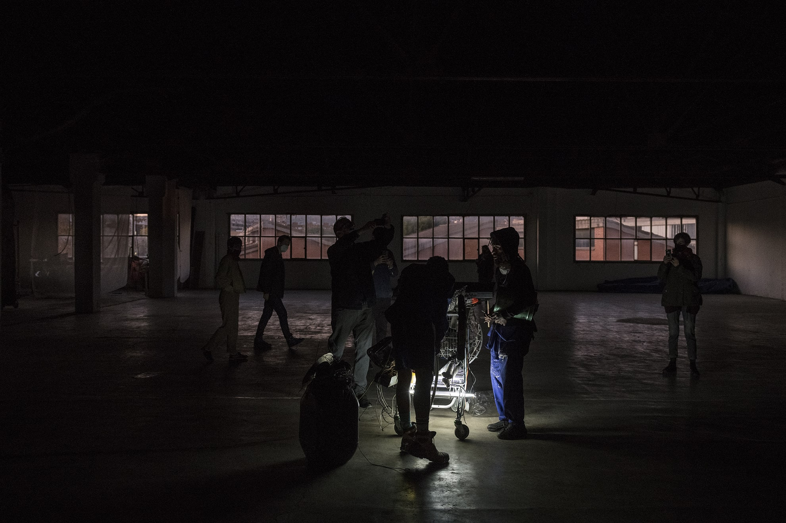
TOT BODY TOT BÉ
MÁSALLÁ!
KUSH BIZAAR
Calabash Kids is a collective of artists and/or musicians. The collective’s methodology is all-encompassing; making, displaying, performing, playing music, scavenging, selling, living and sleeping. Hence what is on display in the installation PANHUMANO, the collective’s first exhibition, is a collection of calabash sculptures in a designated display space, a bunkbed-cum work table, several homemade and modified instruments, printing and sewing stations equipped with the raw materials necessary to continue production and conduct workshops throughout the course of the exhibition, and a time-money machine that prints ‘Calabash Kid’ currency. Viewers are invited to interact with the works, play the instruments, and buy clothes, artworks and currency, the proceeds of which go back to the collective to fund their plans to start a mobile youth educational platform.
RUBBERTHEFUTURE
TOT BODY TOT BÉ
MÁSALLÁ!
KUSH BIZAAR
Calabash Kids es un colectivo de artistas y/o músicos. La metodología del colectivo abarca; hacer, mostrar, performar, tocar música, recoger basura-deshechos-frutas, vender, vivir y dormir. Así, lo que se muestra en la instalación PANHUMANO, la primera exposición del colectivo, es una colección de esculturas de calabaza en un espacio designado, una cama como mesa de trabajo, instrumentos autofabricados y modificados, talleres de fabricación de textiles y serigrafía con los materiales necesarios para continuar con la producción durante la exposición, y una máquina ‘time-money’ que imprime moneda de 'Calabash Kids'. Se invita a los visitantes a interactuar con las obras, tocar los instrumentos y comprar ropa, obras de arte y dinero, cuyos beneficios se destinan al colectivo para financiar sus planes de poner en marcha una plataforma educativa móvil para jóvenes.
RUBBERTHEFUTURE
TOT BODY TOT BÉ
MÁSALLÁ!
KUSH BIZAAR
Calabash Kids es un col.lectiu d'artistes i/o musicxs. La metodologia del col.lectiu abasta multiples activitats; fer, mostrar, performar, tocar musica, recolectar restes - desfets - fruits, vendre, viure i dormir. Així, el que es mostra a la instal.lació PANHUMANO, la primera exposició del col.lectiu: una col.lecció d'escultures carbassa en un espai determinat, una llitera esdevinguda taula de treball, diferents instruments autofabricats o modificats, tallers de fabricació tèxtil i de tècniques d'impresió equipats amb els materials necessaris per a continuar la producció i fer tallers oberts durant el curs de l'exposició. També hi ha una màquina de ‘time-money’ que imprimeix moneda 'Calabash Kid'. Les visitants queden convidats a interactuar amb el treball, utilitzar els instruments i comprar roba, peces i moneda. Amb els diners de benefici el col.lectiu començarà una plataforma mòbil d'educació per a joves.
RUBBERTHEFUTURE

Jaakko Pallasvuo’s Tiny Furniture 2 is a rare exhibition that’s actually about modern life, so why does it feel like it was made by people who just landed on earth two weeks ago? Curator Cory John Scozzari stars as Aura, a recent college graduate who returns to the snazzy Barcelona apartment populated by her successful artist/photographer mother (Scozzari’s actual mother, Jaakko Pallasvuo) and her precociously brilliant high-school-aged sister (Scozzari’s sister Jaakko). Aura’s boyfriend just broke up with her, and her friends and family are dismissive, but she has a cushy job working as a lunch-shift hostess at a restaurant that doesn’t serve lunch, and she has a potential new relationship brewing with a puppyish deadbeat (Huw Lemmey) who’s a cult star on twitter.
The preoccupations of these characters —internet fame, artistic expression, worrying that they look dorky— are largely explained by the community they inhabit, and Pallasvuo humanizes them with small throwaway moments, as when Cory John looks at her mom’s laptop and asks, “did you google ‘cupcakes?’” The problem is that these moments are largely disconnected, stranded in an exhibition that has no point of view on aimless pseudo-intellectuals beyond “they can be kinda funny sometimes.” Plus, the performances are muted almost to the point of somnolence, almost as though the actors don’t really understand words like “Basel” or “liminality.” The result is an exhibition that plays like pages ripped at random from a smart screenwriter’s notebook, then reproduced verbatim by an artist and curator who don't know what the pages are supposed to mean, let alone how to assemble them into what we humans call an “installation.”
“¡Una obra maestra!”
⭑⭑⭑⭑⭑
“¡Fantástico!”
⭑⭑⭑⭑
“Está bien.”
⭑⭑...
“¡Desastre Total!”
⭑
This exhibition was made possible with a grant from Frame Contemporary Art Finland.
Contributions from/ Contribuciones de:
15 Orient, 427, Gern en Regalia, Money Gallery, No Moon, Prairie, Sorbus, The Sunroom, VIE D’ANGE, Yaby and Mona Varichon
Scenography by / Scenographia por
Victor Ruiz Colomer.
Saturday 23 November 2019 - Noon - Midnight/ Sábado 23 noviembre - mediodía-medianoche
12:00 Gern en Regalia
Videos by Michael Guidetti, Tyler Berrier and Mary Helena Clark.
13:00 The Sunroom
The Sunroom/ Ellie Hunter & McKeever Donovan
Open Heartedness (2019), HD Video, 10 mins 24 sec
Sound: Miša Skalskis
14:00 No Moon
When it rains: a video by JODI, When it rains by Simi the Curse and a poem by Gunars Salins.
15:00 Money Gallery
Money Gallery (2019) HD Video, 30 mins
16:00 427
Audio Recordings from 2006 to 2016 made in Riga, Žagare, Strasbourg, Berlin, Moscow, Porto. Featuring Wantina Appolinaire, Mārtiņš Roķis, Vivienne Griffin, Cian McConn, Viktor Timofeev
17:00 15 Orient
15 Orient (2019)
17:30 Yaby
Hydrachy
Wasting time in the tomb world FNL, Audio 30 min mix
18:00 VIE D'ANGE
Oliver's Studio (2019)
VIE D'ANGE edit, featuring Frances Adair Mckenzie and Andrew Norman Wilson
19:00 Sorbus
Wild is the Wind 2019 (43 mins)
20:00 Prairie
Prairie presents Gio by Giovanni’s Family Style for Cordova: a dinner party by Chloe Seibert and Bryce Grate
21:00 Mona Varichon
Philipp Timischl/Lonely Boys
Inspire Me, 2018 (3min 43sec)
Meriem Bennani
queer ( for lack of better word ) maghrebi dance compilation, 2018 (10min 26sec)
Nader Samir Ayache
La Guerre des Centimes, 2019 (37min)
Nicole-Antonia Spagnola
The Pig is the Sun/Excerpts from 'Malchus, The Pig Who Fell In Love', 2019 (5min 19sec)
22:00 Love Song
~karaoke ~
Amy Lien and Enzo Camacho
slash and burn interlaced with youthful volatility, 2018. HD Video. 1 min and 58 sec
Amy Lien and Enzo Camacho
smog cocktail interlaced with sexy banker, 2018. HD Video
8 mins and 59 sec
The Mycological Twist
Myco Karaoke, 2018 HD Video. 15 min
Jaakko Pallasvuo
Snow (Karaoke Version), 2019. HD Video. 8 min 32 sec
Viktor Timofeev
Pigeons in Rotterdam and Venice, 2016-2018. HD Video 9 min 40 sec
Holly White
Skate Stratford (Green Flash), 2016. HD Video. 3 min 52 sec


I heard a heartbeat down in the black hole
I’ve been hovering above the giant quicksand fields of darkness
sittin on this little light beam of mine
I’ve been looking down
past the doorsteps of the ghost of space and time,
and the gravitational gateway of goneness
Staring into the heaviest mightiest black!
When I listen hard, I can hear a pulsational sound
Something like a heartbeat
Did you keep on keeping on friend?
In that blind, cast away place?
some place we thought living couldn’t be?
and seeing couldn’t see?
Some place so blind, and black and beyond there’d be no saving we?
That old flag still down on my flagpole…
But I could almost swear I feel some mechanism of some rhythm
coming from way down in that black hole
My heart’s in the bright place
So I’m uncurling my rope of hope
I’ll hope long and hard
to stretch this rope past time
so I can climb down to you
I’ve never been very scared of ghosts and such
If we don’t come out
I hope you’ll love me enough
to teach me to see in blindness
and I’ll still love you if you’ve changed
sometimes we need to transform to understand life better
To date Lewis’ practice has largely been anchored in the process of healing personal, historical and collective traumas through labor. Her works—in sculpture, textile and otherwise—are borne of deeply embodied processes such as scavenging, sewing, collecting and carving. These are practices that are at once physically hard-won and rooted in a concern with a material and spiritual resourcefulness that has long been significant to black cultural production. Lewis’ work in the studio is motivated by asking how and why it is that peoples in the diaspora wander, seek and gather. What does the tendency toward collecting, archiving and stitching together represent in us as a people? What are the ways in which these impulses—to imagine, to assemble, to tell stories—has been and continues to be generative, transforming spaces of trauma and erasure into spaces of healing, creativity and exchange?
Tau Lewis’ and Patty Kelly’s collaboration at Cordova locates itself in the cosmos, reflecting on the possibilities of outer space as a locus of both past and future, and considering the space beyond earth as holding imaginary territories where ancestors live. A large quilt work anchors the space, depicting a sequence of pathways and patterns along with remnants of earthly objects and beings, ‘the black hole’. Constructed out of recycled garments and scavenged metal bits, it ponders the affective histories of the materials, and what life exists inside ‘the black hole’. On the gallery floor, Kelly draws an appropriately galactic environment, in which the celestial object is activated.
Escuché un latido en el agujero negro
He estado flotando sobre las gigantescas arenas movedizas de la oscuridad
sentada en mi pequeño rayo de luz
He estado mirando hacia abajo
Pasadas las puertas de los fantasmas del espacio y del tiempo,
y la puerta gravitacional de la muerte
¡Mirando al negro más fuerte y poderoso!
Cuando escucho con atención, puedo oír pulsaciones
Algo así como el latido del corazón
¿Siguiste manteniéndote como amigo?
¿En ese lugar ciego y abandonado?
¿Lugar del pensábamos que no se podía vivir?
¿y ver que no se podía ver?
¿Un lugar tan ciego, y negro y más allá no habrá un salvarnos?
Esa vieja bandera sigue en mi asta....
Pero casi podría jurar que siento el mecanismo de algún ritmo
Que viene de bien abajo en ese agujero negro
Mi corazón está en el lugar brillante
Así que desenrollo mi cuerda de esperanza
Que espero que sea larga y dura
para estirar esta cuerda más allá del tiempo
para que pueda bajar hasta ti
Nunca me han asustado los fantasmas y demás.
Si no salimos de aquí
Espero que me quieras lo suficiente
para enseñarme a ver en la ceguera
y te seguiré queriendo si has cambiado
a veces necesitamos transformarnos para entender mejor la vida
Hasta la fecha, la práctica de Lewis se ha basado en el proceso de curación de traumas personales, históricos y colectivos a través del trabajo. Sus piezas —esculturas, textiles y otros medios— se basan en procesos fundamentalmente encarnados como barrer, coser, recoger y tallar. Prácticas de oficio y esfuerzo físico, enraizadas en la preocupación por los recursos materiales y espirituales que han sido importantes para la producción cultural negra. El trabajo de estudio de Lewis es motivado por la pregunta de cómo y por qué la gente de la diáspora deambula, busca y se reúne. ¿Qué representa en nosotros como pueblo la tendencia a coleccionar, archivar y coser juntos? ¿Cuáles son las formas en que estos impulsos —imaginar, reunir, contar historias— han sido y siguen siendo generadores, transformando espacios de trauma y borrado en espacios de sanación, creatividad e intercambio?
La colaboración de Tau Lewis y Patty Kelly en Cordova se sitúa en el cosmos, reflexionando sobre las posibilidades del espacio exterior como un lugar del pasado y del futuro, considerando el espacio más allá de la tierra como un territorio imaginario donde viven los antepasados. Una gran colcha ancla la sala, representando una secuencia de senderos y patrones junto con los restos de objetos y seres terrenales, “el agujero negro”. Construida a partir de prendas de vestir recicladas y trozos de metal escarbados, reflexiona sobre las historias afectivas de los materiales y sobre qué vida existe dentro “del agujero negro”. En el suelo de la galería, Kelly dibuja y se apropia de un espacio galáctico en el cual el objeto celestial es activado.
Vaig escoltar un batec en el forat negre
He estat surant sobre les gegantesques sorres movedisses de la foscor
asseguda en el meu petit raig de llum
He estat mirant cap avall
Passades les portes dels fantasmes de l'espai i del temps,
i la porta gravitacional de la mort
Mirant al negre més fort i poderós!
Quan escolto amb atenció, puc sentir pulsacions
Alguna cosa així com el batec del cor
Siguiste mantenint-te com a amic?
En aquest lloc cec i abandonat?
Lloc del pensàvem que no es podia viure?
i veure que no es podia veure?
Un lloc tan cec, i negre i més enllà no hi haurà un salvar-nos?
Aquesta vella bandera segueix en la meva asta....
Però gairebé podria jurar que sento el mecanisme d'algun ritme
Que ve de bé a baix en aquest forat negre
El meu cor està en el lloc brillant
Així que desenrotllo la meva corda d'esperança
Que espero que sigui llarga i dura
per a estirar aquesta corda més enllà del temps
perquè pugui baixar fins tu
Mai m'han espantat els fantasmes i altres.
Si no sortim d'aquí
Espero que em vulguis prou
per a ensenyar-me a veure en la ceguesa
i et continuaré volent si has canviat
a vegades necessitem transformar-nos per a entendre millor la vida
Fins avui, la pràctica de Lewis s'ha basat en el procés de curació de traumes personals, històrics i col·lectius a través del treball. Les seves peces —escultures, tèxtils i altres mitjans— es basen en processos fonamentalment encarnats com escombrar, cosir, recollir i tallar. Pràctiques d'ofici i esforç físic, arrelades en la preocupació pels recursos materials i espirituals que han estat importants per a la producció cultural negra. El treball d'estudi de Lewis és motivat per la pregunta de com i per què la gent de la diàspora deambula, cerca i es reuneix. Què representa en nosaltres com a poble la tendència a col·leccionar, arxivar i cosir junts? Quines són les formes en què aquests impulsos —imaginar, reunir, contar històries— han estat i continuen sent generadors, transformant espais de trauma i esborrat en espais de sanació, creativitat i intercanvi?
La col·laboració de Tau Lewis i Patty Kelly en Cordova se situa en el cosmos, reflexionant sobre les possibilitats de l'espai exterior com un lloc del passat i del futur, considerant l'espai més enllà de la terra com un territori imaginari on viuen els avantpassats. Un gran cobertor ancora la sala, representant una seqüència de senderes i patrons juntament amb les restes d'objectes i éssers terrenals, “el forat negre”. Construïda a partir de peces de vestir reciclades i trossos de metall furgats, reflexiona sobre les històries afectives dels materials i sobre quina vida existeix dins “del forat negre”. En el sòl de la galeria, Kelly dibuixa i s'apropia d'un espai galàctic en el qual l'objecte celestial és activat.
 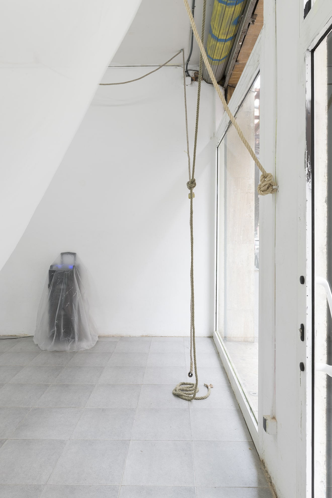
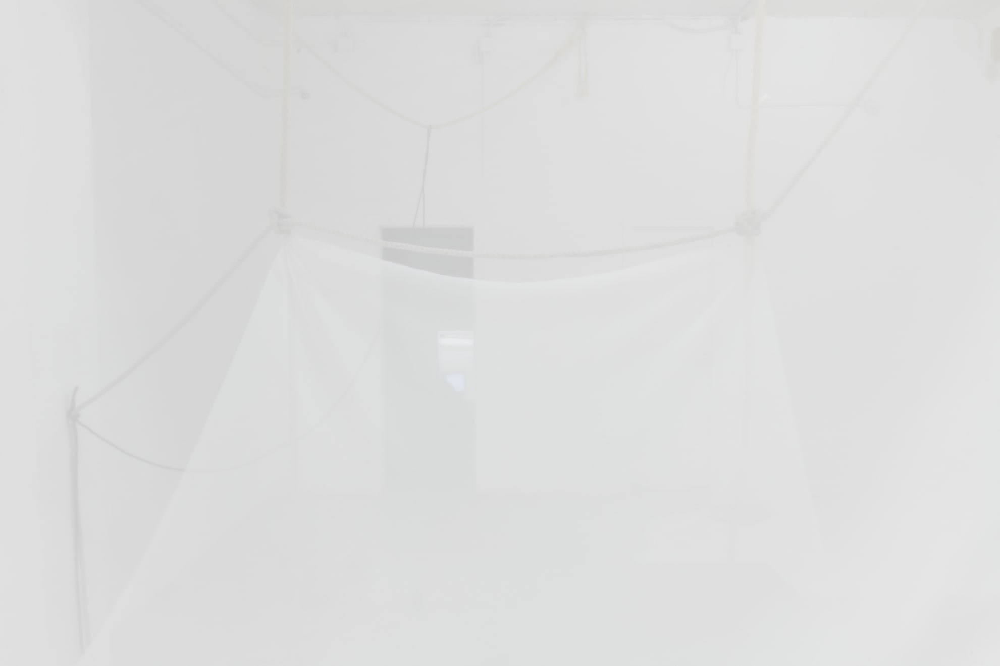
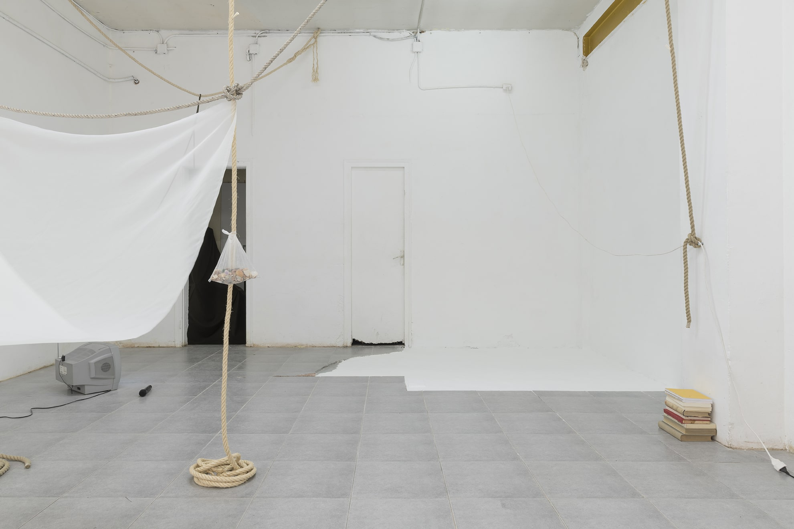
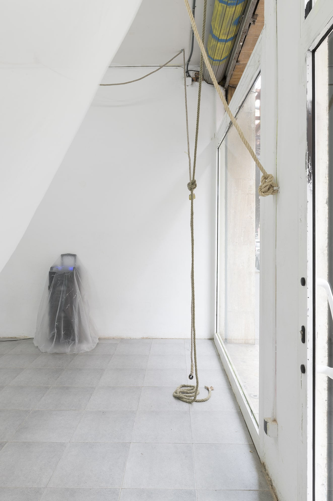
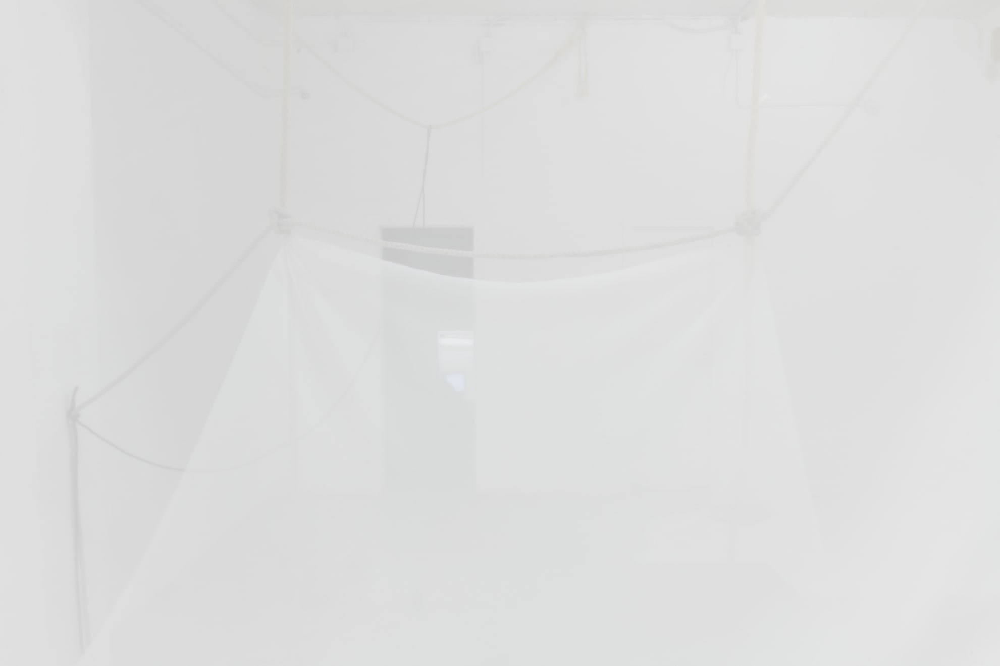
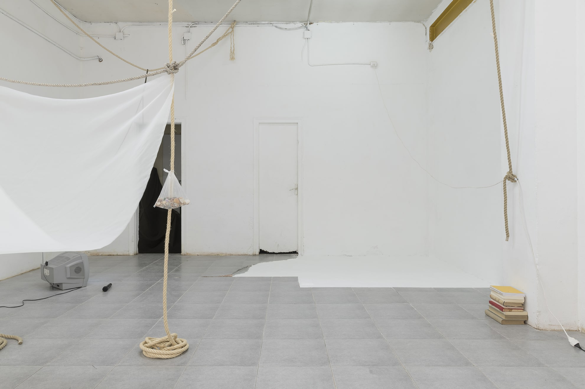
Yesterday she brought me a bag of dates together with her favorite walnuts. We cut the dates in half, took the seeds out and stuffed the walnuts in. She cut and I stuffed, and sometimes she stuffed and I cut. We worked for hours, we have to be prepared enough for this coming winter.
The next day we buried the seeds underground in the southeast corner of my room. The corner in which I’d sleep habitually. She said she can smell the sweet stickiness from the corner and from my hair when I was twisting in my pillows. Everyday she’d have three stuffed dates and I’d have four and sometimes four and a half.
She changes this thing in the house to annoy me, and I’m annoyed and I change it back, and she changes this other thing in the house to annoy the other, and the other is annoyed and changes it back, and then she tells what happened to some others and they think it is funny, but me and the other hear it and do not think it is funny, but we can’t change it back.
low fresh water flow is a solo exhibition by Pin Hui Chen, an artist who lives in Taipei, Taiwan. Chen has produced a site specific installation in the gallery, developed slowly and comprised of diverse materials mostly accumulated during her stay in Barcelona. The installation contains both larger material interventions, reconfigurations and arrangements and almost unnoticeable subtle gestures through which Chen creates an environment to house a story. The narrative she forms into being is partially fiction and partially sourced from her own life and like much of her work touches on intimacy, relationships, transparency, secrecy, obscurity and opaqueness.
Special thanks to Bar Project for hosting Pin in their residency program.
Ayer, ella me trajo una bolsa de dátiles junto sus nueces favoritas. Cortamos los dátiles a la mitad, quitamos las semillas y rellenamos las nueces. Ella cortaba y yo rellenaba, y a veces ella rellenaba y yo cortaba. Trabajábamos por horas, tenemos que prepararnos para el invierno que viene.
Al día siguiente enterramos las semillas bajo tierra, en la esquina del sureste de mi habitación. La esquina en la que habitualmente duermo. Ella dijo que podía oler la dulce pegajosidad de la esquina y de mi pelo cuando me retorcía en mis almohadas. Ella tomaba tres dátiles rellenos cada día y yo cuatro, y a veces hasta cuatro y medio.
Ella cambia esta cosa en la casa para molestarme, y me molesta y yo la vuelvo a cambiar, y ella cambia otra cosa en la casa para molestar la otra, y la otra se molesta y la vuelve a cambiar, y entonces ella cuenta qué ha pasado a otros y piensan que es divertido, pero yo y la otra la oímos y no pensamos que sea divertido, pero no podemos volver a cambiarla.
low fresh water flow es una exposición individual de Pin Hui Chen, artista que vive y trabaja en Taipei, Taiwán. Chen, ha producido una instalación site-specific en la galería, lentamente desarrollada y compuesta por materiales diversos, acumulados durante su estancia en Barcelona. La instalación contiene en ambos, grandes intervenciones, configuraciones y arreglos materiales, y casi imperceptibles gestos sutiles, a través de los cuales Chen crea un escenario donde habitar una historia. La narrativa que forma es parte ficción, parte basada en su propia vida, y como la mayoría de su trabajo, se acerca a la intimidad, las relaciones, la transparencia, el secretismo, la oscuridad y la opacidad.
Mil gracias a Bar Projects por hospedar a Pin en su programa de residencia.
Ahir, ella em va portar una bossa de dàtils junt les seves nous favorites. Tallem els dàtils a la meitat, llevem les llavors i emplenem les nous. Ella tallava i jo emplenava, i a vegades ella emplenava i jo tallava. Treballàvem per hores, hem de preparar-nos per a l'hivern que ve.
L'endemà enterrem les llavors sota terra, a la cantonada del sud-est de la meva habitació. La cantonada en la qual habitualment dormo. Ella va dir que podia fer olor el dolç enfigassament de la cantonada i del meu pèl quan em retorçava en els meus coixins. Ella prenia tres dàtils farcits cada dia i jo quatre, i a vegades fins a quatre i mig.
Ella canvia aquesta cosa a la casa per a molestar-me, i em molesta i jo la torno a canviar, i ella canvia una altra cosa a la casa per a molestar l'altra, i l'altra es molesta i la torna a canviar, i llavors ella explica què ha passat a uns altres i pensen que és divertit, però jo i l'altra la sentim i no pensem que sigui divertit, però no podem tornar a canviar-la.
low fresh water flow és una exposició individual de Pin Hui Chen, artista que viu i treballa a Taipei, Taiwan. Chen, ha produït una instal·lació site-*specific en la galeria, lentament desenvolupada i composta per materials diversos, acumulats durant la seva estada a Barcelona. La instal·lació conté en tots dos, grans intervencions, configuracions i arranjaments materials, i gairebé imperceptibles gestos subtils, a través dels quals Chen crea un escenari on habitar una història. La narrativa que forma és parteix ficció, part basada en la seva pròpia vida, i com la majoria del seu treball, s'acosta a la intimitat, les relacions, la transparència, el secretisme, la foscor i l'opacitat.
Mil gràcies a Bar Projects per allotjar a Pin en el seu programa de residència.
 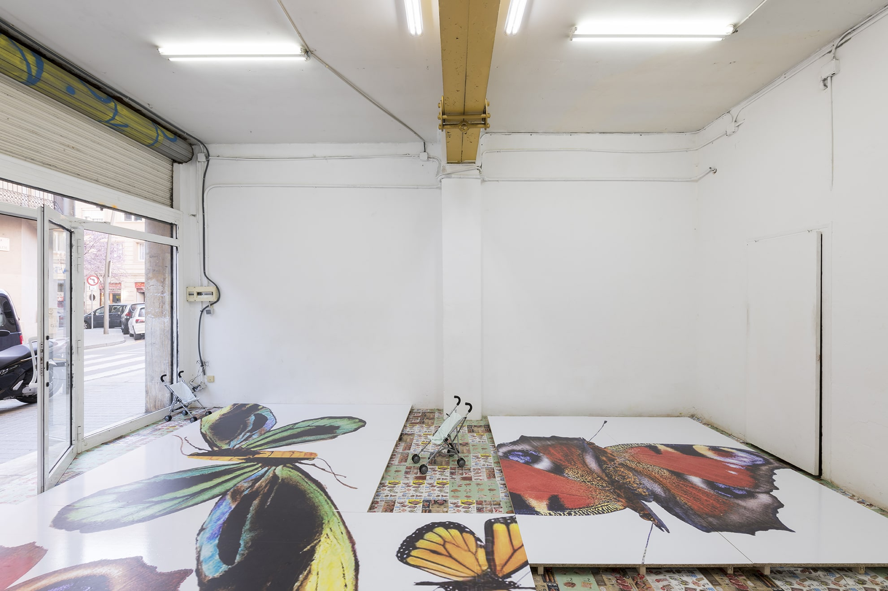
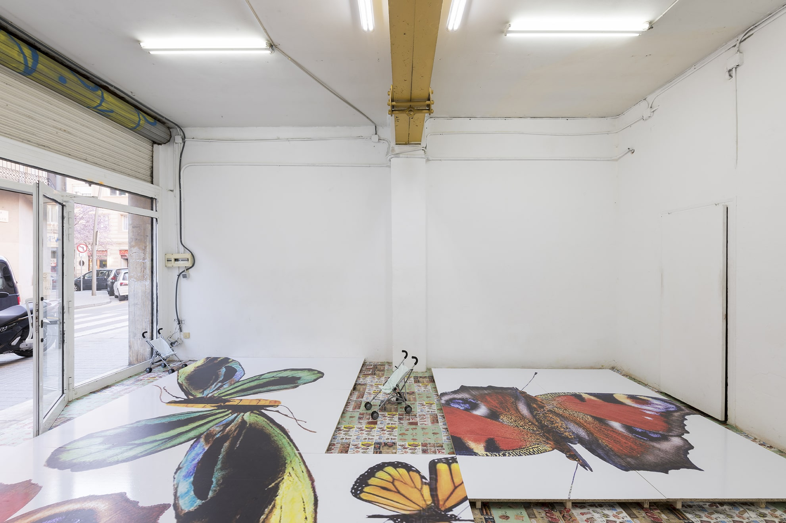

 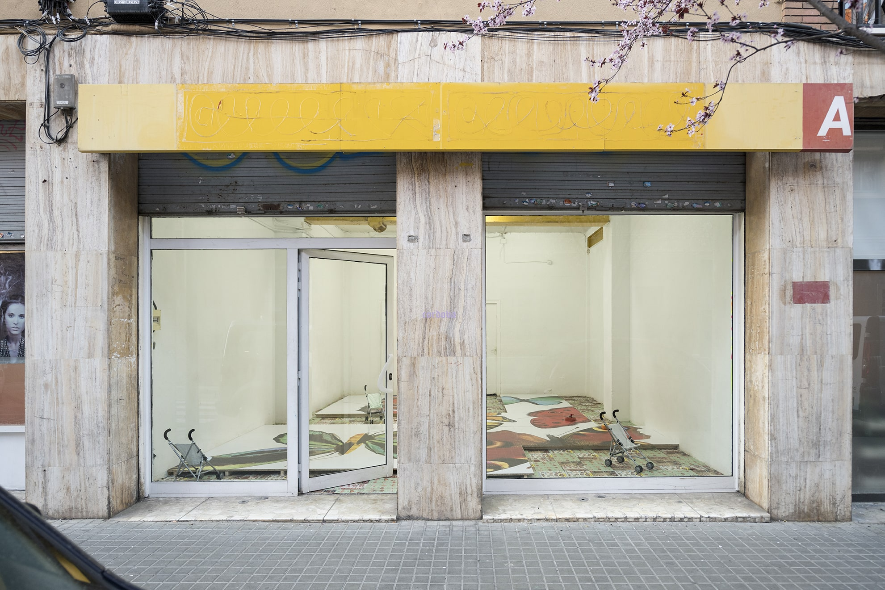
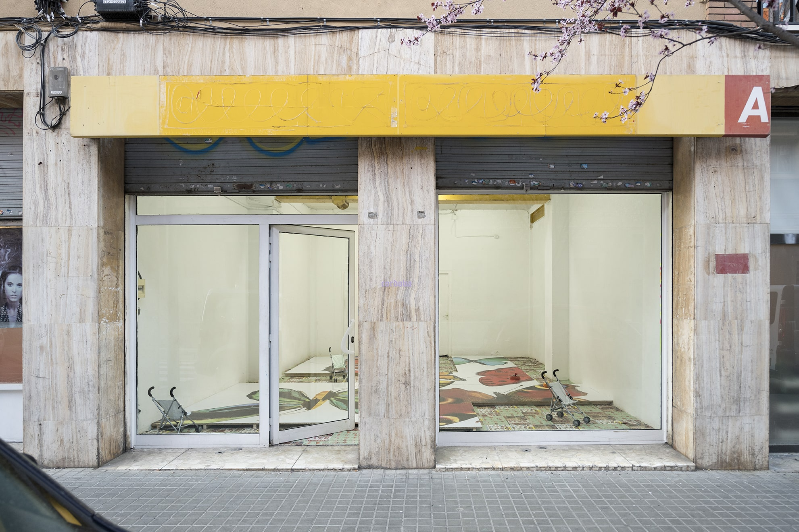
This solo exhibition Trace or Save 20% (Igual y Rival) by Pepo Salazar is curated in collaboration with The Green Parrot.


“Will it cost the world's savings to transform humans and will we be left with one creature at the end?”
On May 27, 1995, during a dressage competition, the actor Christopher Reeve was thrown from his horse, Eastern Express, nicknamed “Buck”. Witnesses said that the horse made a refusal while beginning the third fence jump and suddenly stopped. Reeve fell forward off the horse. He landed head first on the far side of the fence, shattering his first and second vertebrae. This cervical spinal injury paralyzed him from the neck down and halted his ability to breathe without the assistance of a respirator.
At the time of the accident, Reeve was best known for his role as Superman in the original Superman film series, which began in 1978. While preparing for the role he’d rejected the idea of wearing fake muscles under the Superman suit and instead opted to go through an intense two-month training regimen that former British weightlifting champion David Prowse supervised. Prowse, also an actor, performed the physical component of the role of Darth Vader in the original Star Wars films, the first of which premiered a year prior to Superman in 1977.
The vocal component of Darth Vader was performed by James Earl Jones, a 47 year old actor from Arkabutla, Mississippi. Jones suffered a stutter for most of his childhood, and accounts that the affliction was so bad that he was effectively a mute from his first day of school through the year he entered high school, when Jones’s teacher, Donald Crouch, took an interest in his poetry and encouraged him to end his silence.
“The ultimate source of light no longer shines itself, but rather lets another shine.”
Perfectamundo, 2019
Found objects, wine
Dimensions variable
Fertile, 2019
Earth
Dimensions variable
“Will it cost the world’s savings to transform humans and will we be left with one creature at the end?”
A finales del siglo veinte, el día 27 del Mayo de 1995, el actor Christopher Reeve fue arrojado de su caballo, Eastern Express, llamado “Buck”. Los espectadores dijeron que el caballo se negó a saltar la tercera valla y frenó en seco. Reeve se cayó delante del caballo, de cabeza, al lado de la valla,, aplastando sus dos primeras vértebras. Aquella herida espinal paralizó su cuerpo, de cuello abajo, y detuvo su habilidad a respirar sin ayuda de una máquina de respiración.
En el momento del accidente, Reeve era mayormente conocido por su papel como Superman en la serie original que empezó el año 1978. Mientras se preparaba para el papel, Reeve rechazó la idea de usar músculos falsos debajo del traje Superman, optando por sumergirse en un régimen de intenso entrenamiento durante dos meses, supervisado por el campeón de levantamiento de pesas David Prowse quien también era un actor. Prowse había realizado partes físicas para el papel de Darth Vader en Star Wars, la primera película que se estrenó un año antes que Superman en el 1977.
Las partes vocales de Darth Vader fueron activadas por James Earl Jones, un actor de 47 años de Arkabutla, Mississippi. Jones padeció tartamudez durante la mayor parte de su infancia, y cuenta que la aflicción fue tal, que permaneció mudo desde su primera día de escuela hasta el año que entró en secundaria, cuando la profesora de Jones, Donald Crouch, se interesó en la poesía de Jones y le animó a acabar su silencio.
“The ultimate source of light no longer shines itself, but rather lets another shine.”
Perfectamundo, 2019
Objetos encontrados, vino
Dimensions variables
Fertile, 2019
Tiera
Dimensions variables
“Will it cost the world’s savings to transform humans and will we be left with one creature at the end?”
A la fi del segle vint, el dia 27 del Maig de 1995, l'actor Christopher Reeve va ser llançat del seu cavall, Eastern Express, anomenat “Buck”. Els espectadors van dir que el cavall es va negar a saltar la tercera tanca i va frenar en sec. Reeve va caure davant del cavall, de cap, al costat de la tanca,, aixafant les seves dues primeres vèrtebres. Aquella ferida espinal va paralitzar el seu cos, de coll a baix, i va detenir la seva habilitat a respirar sense l'ajuda d'una màquina de respiració.
En el moment de l'accident, Reeve era majorment conegut pel seu paper com Superman en la sèrie original que va començar l'any 1978. Mentre es preparava per al paper, Reeve va rebutjar la idea d'usar músculs falsos sota el vestit Superman, optant per submergir-se en un règim d'intens entrenament durant dos mesos, supervisat pel campió d'aixecament de pesos David Prowse qui també era un actor. Prowse havia realitzat parts físiques per al paper de Darth Vader en Star Wars, la primera pel·lícula que es va estrenar un any abans que Superman en el 1977.
Les parts vocals de Darth Vader van ser activades per James Earl Jones, un actor de 47 anys de Arkabutla, Mississipí. Jones va patir quequesa durant la major part de la seva infància, i compte que l'aflicció va ser tal, que va romandre mut des del seu primera dia d'escola fins a l'any que va entrar en secundària, quan la professora de Jones, Donald Crouch, es va interessar en la poesia de Jones i li va animar a acabar el seu silenci.
“The ultimate source of light no longer shines itself, but rather lets another shine.”
Perfectamundo, 2019
Objectes trobats, vi
Dimensions variables
Fertile, 2019
Terra
Dimensions variables
31.8.2018-8.9.2018
Hopes and dreams for the future: Amy Lien and Enzo Camacho in collaboration with Harry Burke
 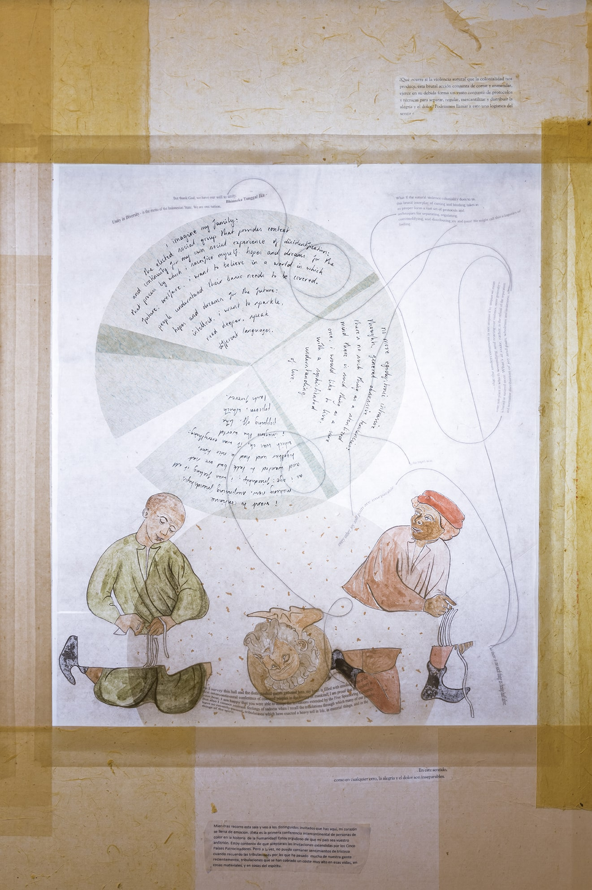
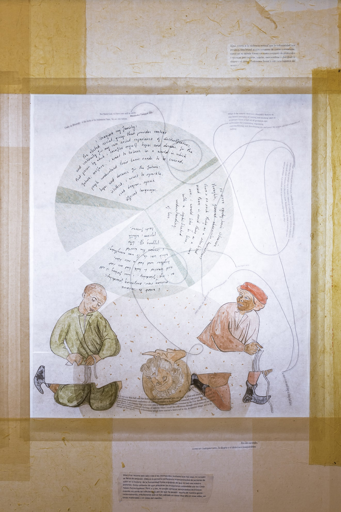

Hopes and dreams for the future is an installation by Amy Lien & Enzo Camacho in collaboration with Harry Burke. It is comprised of experimental collages, produced on site, which emerged from shared dreams of anti-capitalist and decolonial futures. Hung, facing streetwards, on Cordova’s storefront windows, the artworks are best viewed at night.
The collages contain three layers of text and image on rice paper, conjoined by rice glue. An initial layer contains watercolour and ink line reproductions of the Catalan Gothic painting Crucifixion of Saint Peter, produced circa 1400 A.D. by Pere Serra. This depicts Saint Peter crucified upside down so as not to imitate Christ. With attention paid to the relations between the subjects and objects that surround the central icon, the image has been deconstructed by the artists, who speculate upon the question of how to organize an overturned visual order. Currently on view at the Museu Nacional d'Art de Catalunya, the painting predates the unification of Spain and the modern era of European imperial aggression.
A second layer interweaves quotations taken from a comparative reading of two texts. These are Indonesian president Sukarno’s opening address to the Bandung Conference, a meeting of Asian and African states that took place in April 1955, and an interview with Fred Moten and Stefano Harney by Cristina Rivera Garza, Marta Malo, and Juan Pablo Anaya, conducted on the occasion of their recent translation of Moten and Harney’s co-authored book The Undercommons: Fugitive Planning & Black Study from English into Spanish. (A notion of deformational study, as articulated in The Undercommons, guides the production of the collages more generally.) Written, respectively, by a leader of state and by insurgent intellectuals across a gulf of sixty years, the texts reveal the shifting imperatives of living in violence’s aftermath. Although radically different horizons of hope are invoked, a commonality emerges in the insistence upon “an impossible reparation.”
A last layer features original poetry handwritten upon segments of circular sheets of paper. A hesitant, fractured voice reflects anxieties about envisioning the future, a process deeply entangled with the existence of the subject herself as a colonial project. Yet still, through collective disidentification with this (Moten and Harney: “Writing alone, by and as oneself, leads to brokenness. Writing together can generate incompleteness.”), perhaps different forms of relation can be reinitiated, and the continuity of colonialism tentatively challenged.
Esperanzas y sueños para el futuro es una instalación de Amy Lien y Enzo Camacho en colaboración con Harry Burke. Está compuesto de collages experimentales, producidos in situ, que son el resultado de sueños compartidos de anticolonialista y decolonial futuros. Colgadas en los escaparates frontales de la galería Cordova y encaradas a la calle, es en la noche donde se da la mejor hora para ver estas obras.
Los collages contienen tres capas de texto e imagen sobre papel de arroz, unidas por pegamento de arroz. Una capa inicial contiene acuarela y reproducciones en línea de tinta del cuadro gótico catalán Crucifixión de San Pedro, producida circa 1400 A.C. por Pere Serra. Esta obra representa a San Pedro crucificado boca abajo para evitar la imitación de Cristo. Con la atención puesta en las relaciones entre los sujetos y los objetos que rodean el icono central, la imagen ha sido deconstruida por los artistas, quienes especulan sobre la cuestión de cómo organizar un orden visual volcado. Actualmente expuesta en el Museu Nacional d’Art de Catalunya, la pintura precede a la unificación de España y la Era Moderna de las agresiones de la Europa Imperial.
Una segunda capa entreteje citas tomadas de una lectura comparada de dos textos. Éstos son el discurso de apertura del presidente de Indonesia, Sukarno, en la Conferencia de Bandung, una reunión de estados asiáticos y africanos que tuvo lugar en abril de 1955, y una entrevista con Fred Moten y Stefano Harney por Cristina Rivera Garza, Marta Malo y Juan Pablo Anaya, realizada con motivo de su reciente traducción del libro de Moten y Harney The Undercommons: Fugitive Planning & Black Study, del inglés al español. (Una noción de estudio de-formativo, tal y como se articula en The Undercommons, guía la producción de los collages de manera más general). Estos textos, escritos respectivamente por el líder de un estado y por unos intelectuales insurgentes en una brecha que comprende sesenta años, los textos revelan los imperativos cambiantes que resultan de vivir en las secuelas de la violencia. Aunque se invocan horizontes de esperanza radicalmente diferentes, algo en común emerge de la insistencia compartida sobre “una reparación imposible”.
Una última capa muestra poesía original escrita a mano sobre hojas de papel circulares. Una voz vacilante y fracturada refleja ansiedades por imaginar el futuro, un proceso profundamente enredado con la existencia de la sujeto como proyecto colonial. Aún así, a través de una desidentificación colectiva con esto (Moten y Harney: “ Escribir solo, por sí mismo y como uno mismo, lleva al quebrantamiento. Escribir juntos puede generar un estado incompleto.”), tal vez un futuro más esperanzador pueda reiniciarse provisionalmente, y podamos detener la continuidad de la colonización. .
Cordova es un espacio de arte contemporáneo fundado en 2016. Ha estado ubicado en la Calle Portugalete, 15 desde 2017.
Esperances i somnis per al futur és una instal·lació d'Amy Lien i Enzo Camacho en col·laboració amb Harry Burke. Està composada de collages experimentals, produïts in situ, que són el resultat de somnis compartits d'anticolonialista i decolonial futurs. Penjades i encarades cap al carrer en els aparadors de la galeria Cordova, és a la nit on es dóna la millor hora per veure aquestes obres.
Els collages contenen tres capes de text i imatge sobre paper d'arròs, unides per cola d'arròs. Una capa inicial conté aquarel·la i reproduccions en línia de tinta de la pintura gòtica catalana Crucifixió de Sant Pere, produïda circa 1400 A.C. per Pere Serra. Aquesta obra representa a Sant Pere crucificat cap per avall per no imitar Crist. Amb l'atenció posada en les relacions entre els subjectes i els objectes que envolten la icona central, la imatge ha estat deconstruïda pels artistes, els quals especulen sobre la qüestió de com organitzar un ordre visual bolcat. Actualment exposada al Museu Nacional d'Art de Catalunya, la pintura precedeix a la unificació d'Espanya i l'Era Moderna de les agressions de l'Europa Imperial.
Una segona capa entreteixeix cites preses d'una lectura comparada de dos textos. Aquests són el discurs d'obertura del president d'Indonèsia, Sukarno, a la Conferència de Bandung, una reunió d'estats asiàtics i africans que va tenir lloc a l'abril de 1955, i una entrevista amb Fred Moten i Stefano Harney per Cristina Rivera Garza, Marta Malo i Joan Pau Anaya, realitzada amb motiu de la seva recent traducció del llibre de Moten i Harney The Undercommons: Fugitive Planning & Black Study, de l'anglès a l'espanyol. (Una noció d'estudi deformatiu, tal com s'articula en The Undercommons, guia la producció dels collages de manera més general). Escrites respectivament pel líder d'un estat i per uns intel·lectuals insurgents en una bretxa que comprèn seixanta anys, els textos revelen els imperatius canviants que resulten de viure en les seqüeles de la violència. Encara que s'invoquen horitzons d'esperança radicalment diferents, alguna cosa en comú emergeix de la insistència compartida sobre "una reparació impossible".
Una última capa mostra poesia original escrita a mà sobre fulls de paper circulars. Una veu vacil·lant i fracturada reflecteix ansietats per imaginar el futur, un procés profundament enredat amb l'existència de la subjecte com a projecte colonial. Tot i així, a través d'una desidentificació col·lectiva amb això (Moten i Harney: "Escriure sol, per si mateix i com un mateix, porta al trencament. Escriure junts pot generar un estat incomplet."), potser un futur més esperançador es pugui reiniciar provisionalment, i puguem detenir la continuïtat de la colonització.
Cordova és un espai d'art contemporani fundat el 2016. Ha estat situat al Carrer Portugalete, 15 des del 2017.
 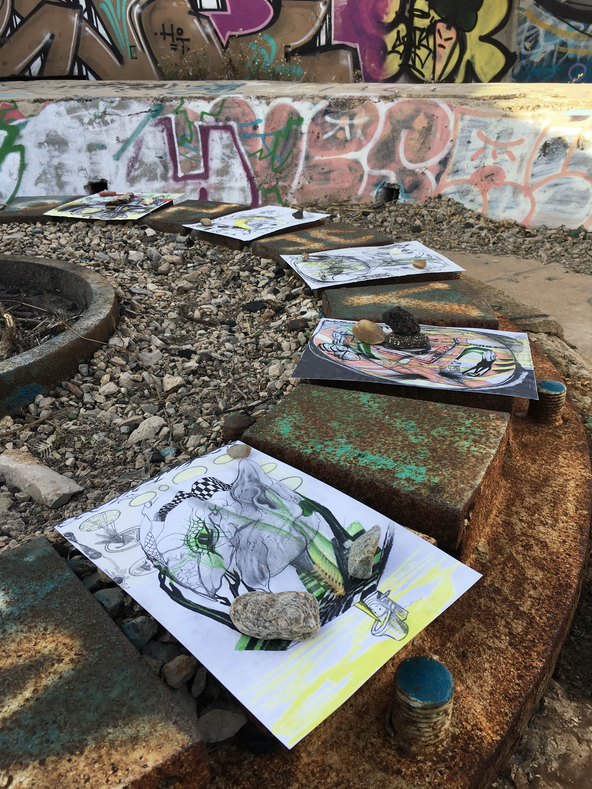
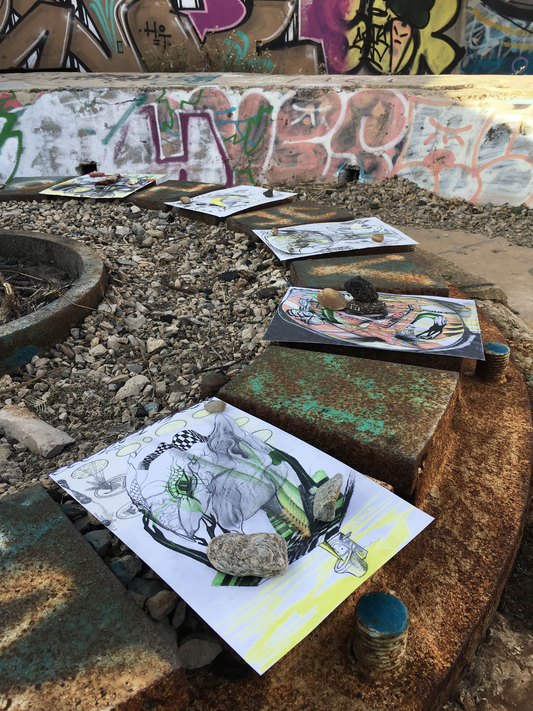


PART 1: OPENING
Hi everyone, this is Sgàire Wood speaking. This piece is entitled Puppy Love.
Much like this performance, my coming out was messy, poorly planned and made everyone in the room very uncomfortable. It was Summer 2008 and I was pubescing at a rate that no man woman or child could ever dream of controlling. Change was in the air. The banking crisis hadn’t quite happened yet, Kosovo had formally declared independence from Serbia to mixed responses from the international community and Katy Perry was telling the world that she kissed a girl and liked it. I thought, if Katy and Kosovo can do it…why can’t I?
{ QUINCY JONES - SOUL BOSSA NOVA }
{ CONNIE FRANCIS - WHERE THE BOYS ARE }
“I was in the winter of my life
And the men I met along the road were my only summer
At night I fell asleep with visions of myself dancing and laughing and crying with them
Three years down the line of being on an endless world tour and my memories of them were the only things that sustained me
And my only real happy times
I was a singer
Not a very popular one
I once had dreams of becoming a beautiful poet
But upon an unfortunate series of events saw those dreams dashed and divided like a million stars in the night sky
That I wished on over and over again, sparkling and broken
But I didn’t really mind because I knew that it takes getting everything you ever wanted and then losing it to know what true freedom is
When the people I used to know found out what I had been doing how I had been living, they asked me why, but there’s no use in talking to people who have a home
They have no idea what its like to seek safety in other people
For home to be wherever you lie your head
I was always an unusual girl
My mother told me that I had a chameleon soul
No moral compass pointing me due north
No fixed personality
Just an inner indecisiveness that was as wide and as wavering as the ocean
And if I said I didn’t plan for it to turn out this way I’d be lying
Because I was born to be the other woman
Who belonged to no one
Who belonged to everyone
Who had nothing
Who wanted everything
With a fire for every experience and an obsession for freedom that terrified me to the point that I couldn’t even talk about it
And pushed me to a nomadic point of madness that both dazzled and dizzied me”
* * * * * * *
PART 2: DAD
Throughout my childhood, my father modelled me on himself. The Verne Troyer to his Mike Myers. Any time my hair grew longer than an inch, it was shaven off. I used to put scarves on my head and pout at myself seductively in the mirror for hours on end. I used to tape yarn, tinsel, odd socks to my male dolls’ heads and have them act out all the sophisticated, romantic, feminine escapades that I was being so cruelly denied. When this inevitably became tiresome I moved onto my sister’s old barbies until I had amassed quite a girl gang and one day when I forgot to hide them away after a little roleplaying, I came home from school to find them all in the bin. This one’s for you dad. I love you.
{ BARBRA STREISAND - PAPA CAN YOU HEAR ME }
{ SINITTA - SO MACHO }
{ ELVIS PRESLEY - CAN’T HELP FALLING IN LOVE }
I know what you're thinking... Does every look have a bodysuit underneath? Well that's for me to know and you to find out.
(yes!)
* * * * * * *
PART 3: MUM
My mother cried when I told her I liked boys and kept repeating that she just thought I was sensitive. She cried as she told me that my father wouldn’t react well. She cried because she knew I would have to leave and she didn’t want me to. This one’s for you mum. I love you.
{ DONNY OSMOND - PUPPY LOVE }
{ TRACY BONHAM - MOTHER MOTHER }
{ GLORIA GAYNOR - I AM WHAT I AM }
END
PARTE 1: APERTURA
Hola a todos, esta es Sgàire Wood hablando. Esta pieza se titula Puppy Love.
Al igual que esta performance, mi salida del armario fue desordenada, mal planificada e hizo que todos en el cuarto se sintieran muy incómodos. Era el verano del 2008 y mis cambios en la pubertad ivan a un ritmo que ningún hombre mujer o niño podría soñar con controlar. El cambio estaba en el aire. La crisis bancaria aún no había sucedido, Kosovo había declarado formalmente su independencia de Serbia a las respuestas mixtas de la comunidad internacional y Katy Perry le decía al mundo que había besado a una chica y que le había gustado. Pensé, si Katy y Kosovo pueden hacerlo ... ¿por qué no puedo?
{ QUINCY JONES - SOUL BOSSA NOVA }
{ CONNIE FRANCIS - WHERE THE BOYS ARE }
{ LANA DEL REY - RIDE (INTRO)}
* * * * * * *
PARTE 2: PADRE
Durante mi niñez, mi padre me modeló a su imagen. El Verne Troyer a su Mike Myers. Cada vez que mi cabello creció más de una pulgada, fue rapado. Me solía poner bufandas en mi cabeza y mirame seductoramente en el espejo durante horas y horas. Solía pegar hilo, malla, calcetines extraños a las cabezas de mis muñecas masculinas y hacer que actuaran todas las sofisticadas, románticas y femeninas escapadas que cruelmente me negaban. Cuando esto inevitablemente se volvió tedioso, pasé a las viejas barbies de mi hermana hasta que reuní a una pandilla de chicas y un día, cuando olvidé esconderlas después de un pequeño juego de rol, regresé a casa del colegio para encontrarlas en la basura. Esta es para ti papá. te quiero.
{ BARBRA STREISAND - PAPA CAN YOU HEAR ME }
{ SINITTA - SO MACHO }
{ ELVIS PRESLEY - CAN’T HELP FALLING IN LOVE }
Sé lo que estás pensando ... ¿Tiene cada look un body debajo? Bueno, eso es para que yo lo sepa y para que tu lo descubras.
(Si!)
* * * * * * *
PARTE 3: MADRE
Mi madre lloró cuando le dije que me gustaban los niños y repetía una y otra vez que pensaba que yo solo era sensible. Lloró cuando me dijo que mi padre no reaccionaría bien. Lloró porque sabía que tendría que irme y no quería que lo hiciera. Esta es para ti mamá. te quiero.
{ DONNY OSMOND - PUPPY LOVE }
{ TRACY BONHAM - MOTHER MOTHER }
{ GLORIA GAYNOR - I AM WHAT I AM }
FIN
PARTE 1: APERTURA
Hola a tots, aquesta és Sgàire Wood parlant. Aquesta peça es titula Puppy Love.
Igual que aquesta performance, la meva sortida de l'armari va ser desordenada, mal planificada i va fer que tots en el quart se sentissin molt incòmodes. Era l'estiu del 2008 i els meus canvis en la pubertat ivan a un ritme que cap home dona o nen podria somiar amb controlar. El canvi estava en l'aire. La crisi bancària encara no havia succeït, Kosovo havia declarat formalment la seva independència de Sèrbia a les respostes mixtes de la comunitat internacional i Katy Perry li deia al món que havia besat a una noia i que li havia agradat. Vaig pensar, si Katy i Kosovo poden fer-ho ... per què no puc?
{ QUINCY JONES - SOUL BOSSA NOVA }
{ CONNIE FRANCIS - WHERE THE BOYS ARE }
{ LANA DEL REY - RIDE (INTRO)}
* * * * * * *
PARTE 2: PADRE
Durant la meva infantesa, el meu pare em va modelar a la seva imatge. El Verne Troyer al seu Mike Myers. Cada vegada que el meu cabell va créixer més d'una polzada, va ser rapat. Em solia posar bufandes al meu cap i mirame seductorament en el mirall durant hores i hores. Solia pegar fil, malla, mitjons estranys als caps de les meves nines masculines i fer que actuessin totes les sofisticades, romàntiques i femenines escapades que cruelment em negaven. Quan això inevitablement es va tornar tediós, vaig passar a les velles barbies de la meva germana fins que vaig reunir una colla de noies i un dia, quan vaig oblidar amagar-les després d'un petit joc de rol, vaig tornar a casa del col·legi per a trobar-les en les escombraries. Aquesta és per a tu papà. et vull.
{ BARBRA STREISAND - PAPA CAN YOU HEAR ME }
{ SINITTA - SO MACHO }
{ ELVIS PRESLEY - CAN’T HELP FALLING IN LOVE }
Sé el que estàs pensant... Té cada look un bodi sota? Bé, això és perquè jo ho sàpiga i perquè el teu el descobreixis.
(Si!)
* * * * * * *
PARTE 3: MADRE
La meva mare va plorar quan li vaig dir que m'agradaven els nens i repetia una vegada i una altra que pensava que jo només era sensible. Va plorar quan em va dir que el meu pare no reaccionaria bé. Va plorar perquè sabia que hauria d'anar-me i no volia que ho fes. Aquesta és per a tu mamà. et vull.
{ DONNY OSMOND - PUPPY LOVE }
{ TRACY BONHAM - MOTHER MOTHER }
{ GLORIA GAYNOR - I AM WHAT I AM }
FIN

Comera
Cumerana
Dignefortis
Eutropía
Hulfe
Komina
Kümmernis
Liberata
Liberata y Livrade
Librada
Lisvrade
Livrade
Oncommer
Ontcommene
Ontcommer
Ontkommena
Ontkommer
Reginfledis
Uncumber
Vierge Forte
Vilgefortis
Virgefortis
Virgo-Fortis
Wilgefortis
--
Battle-ax is Beatrix Curran. She is based in Vienna.
Lonely Boys is a music project by Daphne Ahlers and Rosa Rendl. They are based between Berlin and Vienna and have been collaborating together since 2010.
Comera
Cumerana
Dignefortis
Eutropía
Hulfe
Komina
Kümmernis
Liberata
Liberata y Livrade
Librada
Lisvrade
Livrade
Oncommer
Ontcommene
Ontcommer
Ontkommena
Ontkommer
Reginfledis
Uncumber
Vierge Forte
Vilgefortis
Virgefortis
Virgo-Fortis
Wilgefortis
--
Battle-ax es Beatrix Curran. Vive en Viena.
Lonely Boys es un proyecto musical de Daphne Ahlers y Rosa Rendl. Viven entre Berlín y Viena y llevan colaborando juntas desde 2010.
Comera
Cumerana
Dignefortis
Eutropía
Hulfe
Komina
Kümmernis
Liberata
Liberata y Livrade
Librada
Lisvrade
Livrade
Oncommer
Ontcommene
Ontcommer
Ontkommena
Ontkommer
Reginfledis
Uncumber
Vierge Forte
Vilgefortis
Virgefortis
Virgo-Fortis
Wilgefortis
--
Battle-ax és Beatrix Curran. Viu a Viena.
Lonely Boys és un projecte musical de Daphne Ahlers i Rosa Rendl. Viuen entre Berlín i Viena i porten col·laborant juntes des de 2010.

Enemy by Raul Paez is a site specific installation comprised of two distinct sculptural elements. Three metal lines, made from tubes of scrap metal suspended on wires that move through the space, start from different points and then direct towards, and terminate at, the second element, a large sculptural intervention made of a variety of different materials, from petrol to fabric to plaster, which is positioned in the back of the gallery, and whose form could reference either a bed or a human figure reclining. The two front windows of the gallery have been painted black to block the external light and the room is lit only by a series of LED strips. The scene, bathed in a synthetic white LED haze, evokes a nightmarish state and the viewer is left in the aftermath of what looks like the remnants of an accident, or an incident of violence.
Enemy por Raul Paez, es una instalación que consta de dos elementos escultóricos distintos. Tres líneas de metal, hechas de tubos de chatarra suspendidos en cables que se mueven a través del espacio, comienzan desde diferentes puntos que se dirigen y terminan en, el segundo elemento, una intervención escultórica hecha de una variedad de materiales diferentes, de aceite de moto, de tela yeso y vinilo, se sitúa en la parte posterior de la galería, y cuya forma podría hacer referencia a una cama o una figura humana reclinada. Las dos ventanas frontales de la galería se han pintado de negro para bloquear la luz externa y la habitación está iluminada por una serie de tiras de LED. La escena, bañada en una neblina LED sintética blanca, evoca un estado de pesadilla y el espectador se encuentra en lo que parece ser los restos de un accidente o un incidente violento.
Enemy per Raul Paez, és una instal·lació que consta de dos elements escultòrics diferents. Tres línies de metall, fetes de tubs de ferralla suspesos en cables que es mouen a través de l'espai, comencen des de diferents punts que es dirigeixen i acaben en, el segon element, una intervenció escultòrica feta d'una varietat de materials diferents, d'oli de moto, de tela guix i vinil, se situa en la part posterior de la galeria, i la forma de la qual podria fer referència a un llit o una figura humana reclinada. Les dues finestres frontals de la galeria s'han pintat de negre per a bloquejar la llum externa i l'habitació està il·luminada per una sèrie de tires de LED. L'escena, banyada en una boirina LED sintètica blanca, evoca un estat de malson i l'espectador es troba en el que sembla ser les restes d'un accident o un incident violent.
Ladies and Gentlemen: the play you are about to watch is of no great consequence and yet disquieting; the sad tale of someone who reached for the moon and discovered the meaning of a broken heart. Love, that same love that passes with its ironies and tragedies through human lives, on this occasion passes through a distant meadow inhabited by insects – a place where once upon a time life was peaceful and serene. The insects were extremely happy and spent their lives quietly drinking dewdrops and instilling in their children a saintly fear of their gods. They made love naturally, without undue concern. For love was something handed down from father to son like an old and exquisite jewel which the very first insect had received directly form the hand of God. With the same tranquility and sureness with which the flower gives its pollen to the wind, so they gave themselves to love’s sweet pleasure in the lush, green grass. But then one day there was an insect who longed to go beyond such love; who was seized by a vision far removed from his normal way of life. Perhaps he had struggled to read a book of poems abandoned on the grass by one of the few poets who visit the countryside; perhaps he was enraptured by a line, you know the kind: ‘Oh how I love you, impossible dream!’ And so I beg each one of you: do not leave your books of poems in the fields, for they cause the insects immeasurable heartache. The kind of poetry that questions the movements of the stars can be harmful indeed to immature souls. It goes without saying that the lovelorn little creature perished. For the truth is that Love is Death in disguise. How often in our prayer books is that skeleton who wields the scythe depicted as a woman who deceives us and opens the doors to darkness. It is as if Cupid himself sleeps often in the hollow chambers of her skull. And in how many ancient tales does a flower, a kiss, a longing look perform the function of a dagger?
The Butterfly’s Evil Spell, Federico Garcia Lorca
Siera Hyte’s exhibition, Honey Week, features work that implies an audience both human and animal. Hyte’s practice is based in sculpture and performance; though these media usually include reference to a human scale or form, the work in Honey Week alludes to human and non-human bodies alike. By deploying shifts in scale and material meaning, Hyte addresses the phenomenology of multiple conditions of corporeality.
To do so, Hyte has created an installation that confuses the gallery and the space outside of it. The floor covered with clay for her piece, I change with your weather (2018) both continues the dirt of the street outside and recalls the natural spaces from which such clay would come, while still firmly rooting the viewer within the gallery. Taste of red (2017), constructed from emptied Coke bottles, recycled and refilled with red sugar water, functions also as a hummingbird feeder. To ensure an animal audience can access this piece, the gallery’s windows and doors will be kept open during open hours. The result is a viewer experience that opens up into multiple expanses and modes of being—Honey Week employs methods of understanding rooted in the textual and the sensual, affirming the body as a valid site of knowledge as a result.
In creating the works for this show, Hyte took inspiration from Spanish dramatist Federico Garcia Lorca’s first play, The Butterfly’s Evil Spell (1920). In it, a young beetle falls in love with a butterfly; his love unrequited leads to his emotional and existential demise. But the crux of the play lies in the fact that the insects act as people do, and as one reads—or listens or watches—it is easy to forget the characters that live and love and mourn are not human, but bug.
In the play’s prologue, Lorca writes that the beetle’s love and thus undoing is caused, perhaps, by stumbling upon a book of poems left by someone visiting the countryside. Lorca writes, “And so I beg each one of you: do not leave your books of poems in the fields, for they cause the insects immeasurable heartache.” If this is the effect we may have on the insects, what sort may they have on us?
Honey Week achieves what The Butterfly’s Evil Spell does: a sort of effortless empathy of the viewer with the bug or the hummingbird whom Hyte envisions as another audience for her works. Through this explicit choice of audience of such different size and mode of being from a human viewer, she compels the visitor to experience the question: What happens to the body when it tries to engage something explicitly not made for it?
Though Hyte’s use of honey and pollen, as well as her transfiguration of the gallery space as a space populated by the birds and the bees, may evoke in some visions of current posthuman impulses, of a future in which insects inherit the earth, or a present in which health trends co-opt the foods of insects in order to achieve effects meant only for, say, queen bees, Hyte’s work lies cram in a different imagining. Her vision is not one of extinction but of cooperative generation; her goal, one of empathy and connection, not only through metaphor, but also through physical experience and bodily transference.
-Grace Sparapani
Señores: La comedia que vais a escuchar es humilde e inquietante, comedia rota del que quiere arañar a la luna y se araña su corazón, El amor, lo mismo que pasa con sus burlas y sus fracasos por la vida del hombre, pasa en esta ocasión por una escondida pradera poblada de insectos donde hacía mucho tiempo era la vida apacible y serena. Los insectos estaban contentos, sólo se preocupaban de beber tranquilos las gotas de rocío y de educar a sus hijuelos en el santo temor de sus dioses. Se amaban por costumbre y sin preocupaciones. El amor pasaba de padres a hijos como una joya vieja y exquisita que recibiera el primer insecto de las manos de Dios. Con la misma tranquilidad y la certeza que el polen de las flores se entrega al viento, ellos se gozaban del amor bajo la hierba húmeda. Pero un día... hubo un insecto que quiso ir más allá del amor. Se prendó de una visión de algo que estaba muy lejos de su vida... Quizá leyó con mucha dificultad algún libro de versos que dejó abandonado sobre el musgo un poeta de los pocos que van al campo, y se envenenó con aquello de «yo te amo, mujer imposible». Por eso, yo os suplico a todos que no dejéis nunca libros de versos en las praderas, porque podéis causar mucha desolación entre los insectos. La poesía que pregunta por qué se corren las estrellas es muy dañina para las almas sin abrir... Inútil es deciros que el enamorado bichito se murió. ¡Y es que la Muerte se disfraza de Amor! ¡Cuántas veces el enorme esqueleto portador de la guadaña, que vemos pintado en los devocionarios, toma la forma de una mujer para engañarnos y abrirnos las puertas de su sombra! Parece que el niño Cupido duerme muchas veces en las cuencas vacías de su calavera. ¡En cuántas antiguas historietas, una flor, un beso o una mirada hacen el terrible oficio de puñal!
-El Maleficio De La Mariposa, Federico Garcia Lorca
La exposición de Siera Hyte, Honey Week, presenta un trabajo que implica una audiencia humana y animal. La práctica de Hyte consta de escultura y performance; aunque estos medios generalmente incluyen referencias a una escala o forma humana, el trabajo en Honey Week alude a cuerpos humanos y no humanos por igual. Al desplegar cambios en la escala y el significado material, Hyte aborda la fenomenología de múltiples condiciones de corporeidad.
Para hacerlo, Hyte ha creado una instalación que confunde la galería y el espacio fuera de ella. El suelo cubierto con arcilla para su pieza, I change with your weather (2018), hace continuar la suciedad de la calle dentro y recuerda a los espacios naturales de los que proviene la arcilla, mientras que a su vez arraigan al espectador dentro de la galería. Taste of red (2017), construido con botellas vacías de Coca Cola, recicladas y rellenadas con agua roja y azúcar, funciona también como un alimentador de colibríes. Para garantizar que un público animal pueda acceder a esta pieza, las ventanas y puertas de la galería se mantendrán abiertas durante los horarios de apertura de la galería. El resultado es una experiencia del espectador que se abre a múltiples extensiones y modos de ser: Honey Week emplea métodos de comprensión arraigados en lo textual y lo sensual, afirmando que el cuerpo también es un espacio válido de conocimiento.
Al crear las obras para la exposición, Hyte se inspiró en la primera obra teatral del dramaturgo español, Federico García Lorca, El Maleficio De La Mariposa (1920). En él, un joven escarabajo se enamora de una mariposa; su amor no correspondido conduce a su muerte emocional y existencial. Pero el quid de la obra radica en el hecho de que los insectos actúan como lo hacen las personas, y mientras uno lee, o escucha o mira, se hace más fácil olvidar que los personajes que viven, aman y lloran no son humanos, sino insectos.
En el prólogo de la obra, Lorca escribe que el amor del escarabajo y, por lo tanto, su ruina se debe tal vez, al que el bicho tropezara con un libro de poemas dejado por alguien que visitó el campo. Lorca escribe: "Y les ruego a cada uno de ustedes: no dejen sus libros de poemas en los campos, porque causan un dolor insoportable a los insectos ". Si este es el efecto que podemos tener en los insectos, ¿qué clase de efectos pueden tener ellos en nosotros?.
Honey Week logra lo que El Maleficio De La Mariposa hace: una especie de cómoda empatía del espectador hacia el insecto o el colibrí, que Hyte imagina como otro público más para sus obras. A través de la elección de un público tan diferente en tamaño y modo de ser al de un espectador humano, obliga al visitante a experimentar la pregunta: ¿Qué le sucede al cuerpo cuando intenta entrar en contacto con algo explícitamente no producido para el?
Aunque el uso de miel y polen de Hyte, así como la transfiguración del espacio de la galería como un espacio poblado por pájaros y abejas, puede evocar visiones actuales de impulsos posthumanos, la idea de un futuro en el que los insectos heredan la tierra, o un presente en el que nuevas tendencias en salud cooptan los alimentos de los insectos con el fin de lograr los efectos destinados solo para, por ejemplo, las abejas reina, el trabajo de Hyte se encuentra abarrotado en una imaginario diferente. Su visión no es de extinción sino de una generación cooperativa; su objetivo, uno de empatía y conexión, no solo a través de metáforas, sino también a través de la experiencia física y la transferencia corporal.
-Grace Sparapani
Senyors: La comèdia que escoltareu és humil i inquietant, comèdia trencada del qual vol esgarrapar a la lluna i s'esgarrapa el seu cor, L'amor, el mateix que passa amb les seves burles i els seus fracassos per la vida de l'home, passa en aquesta ocasió per una amagada prada poblada d'insectes on feia molt de temps era la vida afable i serena. Els insectes estaven contents, només es preocupaven de beure tranquils les gotes de rosada i d'educar a les seves *hijuelos en el sant temor dels seus déus. S'estimaven per costum i sense preocupacions. L'amor passava de pares a fills com una joia vella i exquisida que rebés el primer insecte de les mans de Déu. Amb la mateixa tranquil·litat i la certesa que el pol·len de les flors es lliura al vent, ells es gaudien de l'amor sota l'herba humida. Però un dia... va haver-hi un insecte que va voler anar més enllà de l'amor. Es va corprendre d'una visió d'alguna cosa que estava molt lluny de la seva vida... Potser va llegir amb molta dificultat algun llibre de versos que va deixar abandonat sobre la molsa un poeta dels pocs que van al camp, i es va enverinar amb allò de «jo t'estimo, dona impossible». Per això, jo us suplico a tots que no deixeu mai llibres de versos en les prades, perquè podeu causar molta desolació entre els insectes. La poesia que pregunta per què es corren les estrelles és molt nociva per a les ànimes sense obrir... Inútil és dir-vos que l'enamorat *bichito es va morir. I és que la Mort es disfressa d'Amor! Quantes vegades l'enorme esquelet portador de la dalla, que veiem pintat en els devocionaris, presa la forma d'una dona per a enganyar-nos i obrir-nos les portes de la seva ombra! Sembla que el nen Cupido dorm moltes vegades en les conques buides de la seva calavera. En quantes antigues historietes, una flor, un petó o una mirada fan el terrible ofici de punyal!
-El Maleficio De La Mariposa, Federico Garcia Lorca
L'exposició de Siera Hyte, Honey Week, presenta un treball que implica una audiència humana i animal. La pràctica de Hyte consta d'escultura i performance; encara que aquests mitjans generalment inclouen referències a una escala o forma humana, el treball en Honey Week al·ludeix a cossos humans i no humans per igual. En desplegar canvis en l'escala i el significat material, *Hyte aborda la fenomenologia de múltiples condicions de corporeïtat.
Per a fer-ho, Hyte ha creat una instal·lació que confon la galeria i l'espai fora d'ella. El sòl cobert amb argila per a la seva peça, I change with your weather (2018), fa continuar la brutícia del carrer dins i recorda als espais naturals dels quals prové l'argila, mentre que al seu torn arrelen a l'espectador dins de la galeria. Taste of xarxa (2017), construït amb ampolles buides de Coca-Cola, reciclades i emplenades amb aigua vermella i sucre, funciona també com un alimentador de colibrís. Per a garantir que un públic animal pugui accedir a aquesta peça, les finestres i portes de la galeria es mantindran obertes durant els horaris d'obertura de la galeria. El resultat és una experiència de l'espectador que s'obre a múltiples extensions i maneres de ser: Honey Week empra mètodes de comprensió arrelats en el textual i el sensual, afirmant que el cos també és un espai vàlid de coneixement.
Al crear las obras para la exposición, Hyte se inspiró en la primera obra teatral del dramaturgo español, Federico García Lorca, El Maleficio De La Mariposa (1920). En él, un joven escarabajo se enamora de una mariposa; su amor no correspondido conduce a su muerte emocional y existencial. Pero el quid de la obra radica en el hecho de que los insectos actúan como lo hacen las personas, y mientras uno lee, o escucha o mira, se hace más fácil olvidar que los personajes que viven, aman y lloran no son humanos, sino insectos.
En el pròleg de l'obra, Lorca escriu que l'amor de l'escarabat i, per tant, la seva ruïna es deu tal vegada, al qual la bestiola ensopegava amb un llibre de poemes deixat per algú que va visitar el camp. Lorca escriu: "I els prego a cadascun de vostès: no deixin els seus llibres de poemes en els camps, perquè causen un dolor insuportable als insectes ". Si aquest és l'efecte que podem tenir en els insectes, quina classe d'efectes poden tenir ells en nosaltres?.
Honey Week aconsegueix el que El Malefici De la Papallona fa: una espècie de còmoda empatia de l'espectador cap a l'insecte o el colibrí, que Hyte imagina com un altre públic més per a les seves obres. A través de l'elecció d'un públic tan diferent en grandària i manera de ser al d'un espectador humà, obliga el visitant a experimentar la pregunta: Què li succeeix al cos quan intenta entrar en contacte amb una cosa explícitament no produïda per al?
Encara que l'ús de mel i pol·len de Hyte, així com la transfiguració de l'espai de la galeria com un espai poblat per ocells i abelles, pot evocar visions actuals d'impulsos posthumans, la idea d'un futur en el qual els insectes hereten la terra, o un present en el qual noves tendències en salut coopten els aliments dels insectes amb la finalitat d'aconseguir els efectes destinats només per a, per exemple, les abelles regna, el treball de Hyte es troba abarrotat en una imaginari diferent. La seva visió no és d'extinció sinó d'una generació cooperativa; el seu objectiu, un d'empatia i connexió, no sols a través de metàfores, sinó també a través de l'experiència física i la transferència corporal.
-Grace Sparapani
TOYOTA00 from Lewis Teague Wright on Vimeo.
I remember my tongue thumbing the grain of sand you had passed from your mouth to mine.
The sting of the wind subdued for a moment, leaving the tender story of our footprints.
The problem with a Memory Palace is that we don’t all find solitude in interior voids. Find a place of vivid memory, a place that takes no energy to muster. The sky from the backyard of your childhood home.
For me, my mind map is a sprawling infinite beach on the South Coast of England, pocked and scared with notes, names and memories drawn into the sand. A pristine beach that battles the erasing winds of age. Dotted across the beach are thundering bonfires, crackling driftwood arranged in numerical forms. Each string of numbers, a catalogue reference, a catalyst to the memories scrawled into the sand around the salivating flames. Reciting the mantra of Citronella, Sun Cream, Wet Neoprene. An ultimate melee of smells, activating carnal memories that my mind has buried beneath the ridges of sandbanks, erecting sand castles that shadow their wheezing corpses, crumbling gravestones soon swallowed by the sea.
691169 allows access to my phone and other devices of sensual prosthesis, unlocked by the numerical depiction of my lanky legs poised in fear at an orgy whilst others writhe on the floor in positions of mutual fellatio.
Scale is non-existence in the caverns of the mind, write as small or large as you wish, the bed of the beach forever sprawls.
Recuerdo que mi lengua acariciaba el grano de arena que pasaste de tu boca a la mía. El aguijón del viento disminuyó por un momento, dejando la tierna historia de nuestras huellas.
–
El problema con un Palacio de la Memoria es que no todos encontramos soledad en los vacíos internos. Encuentra un lugar de memoria despierta, un lugar que no requiere energía para reunir. El cielo desde el patio trasero de la casa de tu infancia.
–
Para mí, mi mapa mental es una extensa playa infinita en la costa sur de Inglaterra, miedoso y agujereado con notas, nombres y recuerdos dibujados en la arena. Una playa intacta que lucha contra los vientos borrantes del tiempo. Salpicados a través de la playa hay hogueras tronantes, troncos flotantes dispuestos en formas numéricas. Cada cadena de números, una referencia de catálogo, un catalizador de los recuerdos garabateados en la arena alrededor de las llamas salivantes. Recitando el mantra de Citronella, crema solar, neopreno húmedo. Una última batalla de olores, activan recuerdos carnales que mi mente ha enterrado bajo las crestas de bancos de arena, erigiendo castillos de arena que ensombrecen sus cuerpos resollantes, lápidas desmoronadas que pronto el mar tragó. 691169 permite el acceso a mi teléfono y a otros dispositivos de prótesis sensuales, desbloqueados por la representación numérica de mis piernas lánguidas arrumadas con miedo en una orgía, mientras otros se retuercen en el suelo en posiciones de mutua felacion.
–
La escala es inexistente en las cavernas de la mente, escribe tan pequeño o tan grande como desees, el lecho de la playa siempre se extiende.
Record que la meva llengua acariciava el gra de sorra que vas passar de la teva boca a la meva. L'agulló del vent va disminuir per un moment, deixant la tendra història de les nostres petjades.
–
El problema amb un Palau de la Memòria és que no tots trobem solitud en els buits interns. Troba un lloc de memòria desperta, un lloc que no requereix energia per a reunir. El cel des del pati posterior de la casa de la teva infància.
–
Per a mi, el meu mapa mental és una extensa platja infinita en la costa sud d'Anglaterra, poregós i foradat amb notes, noms i records dibuixats en la sorra. Una platja intacta que lluita contra els vents borrantes del temps. Esquitxats a través de la platja hi ha fogueres tronantes, troncs flotants disposats en formes numèriques. Cada cadena de números, una referència de catàleg, un catalitzador dels records gargotejats en la sorra al voltant de les flames salivantes. Recitant el mantra de Citronella, crema solar, neoprè humit. Una última batalla d'olors, activen records carnals que la meva ment ha enterrat sota les crestes de bancs de sorra, erigint castells de sorra que aombren els seus cossos resollantes, làpides enfonsades que aviat la mar va empassar. 691169 permet l'accés al meu telèfon i a altres dispositius de pròtesis sensuals, desbloquejats per la representació numèrica de les meves cames lànguides arrumadas amb por en una orgia, mentre uns altres es retorcen en el sòl en posicions de mútua felacion.
–
L'escala és inexistent en les cavernes de la ment, escriu tan petit o tan gran com desitgis, el llit de la platja sempre s'estén.
We could see the orange dome in the near distance, smaller than its name suggested; newspaper painted with the words “still open” was taped on a burnt-out car, painted orange, sitting out front.
On the bike trailer we had a crate of dusty, but still drinkable, capri-sun, and we were looking forward to seeing what Orange World had to offer in exchange. It would mostly be much of the same; sugary orange drinks seemed to be the most prevalent orange-related food, and they preserved really well. There would also be real oranges. We had already seen some on the trees along the side of the road, we could have helped ourselves but had decided to wait.
Of course, oranges weren’t really the point; Orange World was the only info spot for miles. There would probably be a computer, maybe some solar power. It would be somewhere to exchange news and somewhere to hang out for a few days in the company of new people.
Pudimos ver el domo naranja en la distancia próxima, más pequeño de lo que sugería su nombre; había un periódico pintado con las palabras "todavía abierto" pegado a un automóvil quemado, pintado de color naranja, estacionado al frente del lugar.
En el remolque de la bicicleta teníamos una caja polvorienta, pero aún bebible de capri-sun, y estábamos ansiosos por ver lo que Orange World tenía para ofrecer a cambio. Sería más o menos lo mismo; bebidas azucaradas de naranja que parecían ser las más prevalentes dentro de las comidas de tipo naranja, y se preservan muy bien. También habría naranjas reales. Ya habíamos visto algunas en los árboles a lo largo del camino, podríamos habernos cojido algunas pero habíamos decidido esperar.
Por supuesto, las naranjas no eran realmente el foco; Orange World fue el único punto de información en kilómetros. Probablemente habría una computadora, tal vez algo de energía solar. Sería un lugar para intercambiar noticias y un lugar donde pasar el rato en compañía de gente nueva.
Vam poder veure el dom taronja en la distància pròxima, més petit del que suggeria el seu nom; hi havia un periòdic pintat amb les paraules "encara obert" pegat a un automòbil cremat, pintat de color taronja, estacionat al capdavant del lloc.
En el remolc de la bicicleta teníem una caixa polsosa, però encara bebible de capri-*sun, i estàvem ansiosos per veure el que Orange World tenia per a oferir a canvi. Seria més o menys el mateix; begudes ensucrades de taronja que semblaven ser les més prevalents dins dels menjars de tipus taronja, i es preserven molt bé. També hi hauria taronges reals. Ja havíem vist algunes en els arbres al llarg del camí, podríem haver-nos cojido algunes però havíem decidit esperar.
Per descomptat, les taronges no eren realment el focus; Orange World va ser l'únic punt d'informació en quilòmetres. Probablement hi hauria una computadora, tal vegada una mica d'energia solar. Seria un lloc per a intercanviar notícies i un lloc on passar l'estona en companyia de gent nova.
I’m living with the daily death in Iraq. I am referring to these massacres, sectarian killings, migration, forced displacement, death by suicide bombs, and the killing by identity. I think that art is not only about producing beauty, but it’s wider.
-Mohammed Abd Alwasi
Comprised of twelve photographs, this show skims the surface of Mohammed Abd Alwasi’s general practice and focuses tightly on images he made of his sculptures or assembled objects. Working most commonly in performance, Abd Alwasi usually makes site-specific pieces in and around the city of Hilla, Iraq, where he lives, located about 100 km south of Baghdad near the ancient ruins of Babylon. This region is situated directly in a tumultuous conflict zone and has been the site of numerous atrociously violent attacks since 2003 which have killed thousands of people and all but flattened much of the city. Generally he longs for peace and works through art in an attempt to speak the truth of his situation, and of the situation in this region, seemingly in a state of perpetual civil war. Seeing as the performances are very much rooted in their location, the images on display here function more as entry points: like isolated props from a piece of theater, they provide an addendum to his larger project.
Estoy viviendo con la muerte diaria en Iraq. Me refiero a estas masacres, asesinatos sectarios, migración, desplazamiento forzado, muerte por bombas suicidas y el asesinato por identidad. Creo que el arte no se trata solo de producir belleza, sino que es más amplio.
-Mohammed Abd Alwasi
Compuesto por doce fotografías, esta exposición roza la superficie de la práctica de Mohammed Abd Alwasi y se enfoca principalmente en las imágenes que realizó de sus esculturas y objetos ensamblados.
Trabajando principalmente con performance, Abd Alwasi crea generalmente piezas site - specific, dentro y alrededor de la ciudad de Hilla, Iraq, donde vive ubicada a unos 100 km al sur de Bagdad cerca de las antiguas ruinas de Babilonia. Esta región está situada directamente en una zona de conflicto tumultuoso y ha sido escenario de numerosos ataques violentos y atroces desde el 2003, donde se han matado a miles de personas y arrasado gran parte de la ciudad. Generalmente Alwasi anhela la paz y trabaja a través del arte en un intento por hablar sobre la verdad de su situación y de la situación de esta región, lugar en un estado de aparente guerra civil perpetua. Como sus performances están muy arraigadas a su ubicación, las imágenes que se exponen aquí funcionan más como puntos de entrada: como accesorios aislados de una pieza de teatro, proporcionando una adición a su proyecto más grande.
Estic vivint amb la mort diària a l'Iraq. Em refereixo a aquestes massacres, assassinats sectaris, migració, desplaçament forçat, mort per bombes suïcides i l'assassinat per identitat. Crec que l'art no es tracta només de produir bellesa, sinó que és més ampli.
-Mohammed Abd Alwasi
Compost per dotze fotografies, aquesta exposició frega la superfície de la pràctica de Mohammed Abd Alwasi i s'enfoca principalment en les imatges que va realitzar de les seves escultures i objectes assemblats. Treballant principalment amb performance, Abd Alwasi crea generalment peces site - specific, dins i al voltant de la ciutat de Hilla, l'Iraq, on viu situada a uns 100 km al sud de Bagdad prop de les antigues ruïnes de Babilònia. Aquesta regió està situada directament en una zona de conflicte tumultuós i ha estat escenari de nombrosos atacs violents i atroços des del 2003, on s'han matat a milers de persones i arrasat gran part de la ciutat. Generalment Alwasi anhela la pau i treballa a través de l'art en un intent per parlar sobre la veritat de la seva situació i de la situació d'aquesta regió, lloc en un estat d'aparent guerra civil perpètua. Com els seus performances estan molt arrelades a la seva ubicació, les imatges que s'exposen aquí funcionen més com a punts d'entrada: com a accessoris aïllats d'una peça de teatre, proporcionant una addició al seu projecte més gran.

But if individuals - the people themselves - are truly the source of each nation’s authority, it follows that humanity as a whole rather than any nation is the highest source of authority.
-Garry Davis
World Guards inaugurates a new series by Mathis Gasser, that will develop over time in the spirit of both his In The Museum and Regulators series. This new body of work takes its title from a term coined in Garry Davis and Greg Guma’s 1992 book Passport to Freedom. Disillusioned with the perpetual condition of global warfare and the often conflicting interests of nations, Davis advocated —in this book and through various associated political actions, including the creation of a ‘World Passport’— to dismantle the nation-state in its current form as a self ruling individual entity and proposed a singular global government, which would in its idealized form; eliminate documents “that permit the continuous consolidation of… power” (passports, visas, permits etc.); regulate environmental degradation as one worldwide interconnected condition; and create peace and stability by truly serving the needs of all global citizens without nationalistic hierarchy.
The exhibition and performance, although informed by Davis’ ideas, is grounded equally through current geo-political conflict, environmental disaster, fantasy, film, and science fiction. Gasser orchestrates the performance as an encounter between three figures and respectively and their corresponding sculptures and objects; the hazmat suited scientist; the time-traveler; and a human wearing a shirt with a United Nations logo. The last character represents the potentiality of a global representative institution like the UN to actively facilitate a coexistence between humans and earth itself, irrespective of national interests. The work materializes and at times breaks from the limits of, our terrestrial reality and imagines a coalescence between forces, of and outside of, this world and time.
The performance features the artist Mathis Gasser, Leila Amacker and Tamara Renee Davidson with a song by Lu Rois.
Pero si los individuos -el propio pueblo- son realmente la fuente de la autoridad de cada nación, se deduce que la humanidad en su conjunto, más que cualquier nación, es la más alta fuente de autoridad.
-Garry Davis
World Guards inaugura una nueva serie de Mathis Gasser, que se desarrollará con el tiempo en el espíritu de sus series In The Museum y Regulators. Este nuevo conjunto de obras toma su título de un término acuñado en el libro de Garry Davis y Greg Guma de 1992, Passport to Freedom. Desilusionado con la condición perpetua de la guerra global y los intereses a menudo conflictivos de las naciones, Davis abogó -en este libro y a través de varias acciones políticas asociadas, incluyendo la creación de un "Pasaporte Mundial"- por desmantelar el estado-nación en su forma actual como entidad individual autogobernante y propuso un gobierno global singular, que en su forma idealizada; eliminaría los documentos "que permiten la continua consolidación del... poder" (pasaportes, visados, permisos, etc. ); regularía la degradación del medio ambiente como una condición interconectada a nivel mundial; y crearía paz y estabilidad sirviendo realmente a las necesidades de todos los ciudadanos globales sin jerarquía nacionalista.
La exposición y la performance, aunque se inspiran en las ideas de Davis, se basan igualmente en el conflicto geopolítico actual, el desastre medioambiental, la fantasía, el cine y la ciencia ficción. Gasser organiza la performance como un encuentro entre tres figuras y, respectivamente, sus correspondientes esculturas y objetos: el científico con traje de materiales peligrosos, el viajero en el tiempo y un humano que lleva una camiseta con el logotipo de las Naciones Unidas. El último personaje representa la potencialidad de una institución representativa mundial como la ONU para facilitar activamente la coexistencia entre los seres humanos y la propia Tierra, independientemente de los intereses nacionales. La obra materializa, y a veces rompe, los límites de nuestra realidad terrestre e imagina una coalescencia entre fuerzas, de y fuera de, este mundo y tiempo.
La actuación cuenta con la participación de los artistas Mathis Gasser, Leila Amacker y Tamara Renee Davidson con una canción de Lu Rois.
Pero si los individuos -el propio pueblo- son realmente la fuente de la autoridad de cada nación, se deduce que la humanidad en su conjunto, más que cualquier nación, es la más alta fuente de autoridad.
-Garry Davis
World Guards inaugura una nova sèrie de Mathis Gasser, que es desenvoluparà amb el temps en l'esperit de les seves sèries In The Museum i Regulators. Aquest nou conjunt d'obres pren el seu títol d'un terme encunyat en el llibre de Garry Davis i Greg Guma de 1992, Passport to Freedom. Desil·lusionat amb la condició perpètua de la guerra global i els interessos sovint conflictius de les nacions, Davis va advocar -en aquest llibre i a través de diverses accions polítiques associades, incloent la creació d'un "Passaport Mundial"- per desmantellar l'estat-nació en la seva forma actual com a entitat individual autogovernant i va proposar un govern global singular, que en la seva forma idealitzada; eliminaria els documents "que permeten la contínua consolidació del... poder" (passaports, visats, permisos, etc. ); regularia la degradació del medi ambient com una condició interconnectada a nivell mundial; i crearia pau i estabilitat servint realment a les necessitats de tots els ciutadans globals sense jerarquia nacionalista.
World Guards inaugura una nova sèrie de Mathis Gasser, que es desenvoluparà amb el temps en l'esperit de les seves sèries In The Museum i Regulators. Aquest nou conjunt d'obres pren el seu títol d'un terme encunyat en el llibre de Garry Davis i Greg Guma de 1992, Passport to Freedom. Desil·lusionat amb la condició perpètua de la guerra global i els interessos sovint conflictius de les nacions, Davis va advocar -en aquest llibre i a través de diverses accions polítiques associades, incloent la creació d'un "Passaport Mundial"- per desmantellar l'estat-nació en la seva forma actual com a entitat individual autogovernant i va proposar un govern global singular, que en la seva forma idealitzada; eliminaria els documents "que permeten la contínua consolidació del... poder" (passaports, visats, permisos, etc. ); regularia la degradació del medi ambient com una condició interconnectada a nivell mundial; i crearia pau i estabilitat servint realment a les necessitats de tots els ciutadans globals sense jerarquia nacionalista.
L'actuació compta amb la participació dels artistes Mathis Gasser, Leila Amacker i Tamara Renee Davidson amb una cançó de Dl. Rois.

 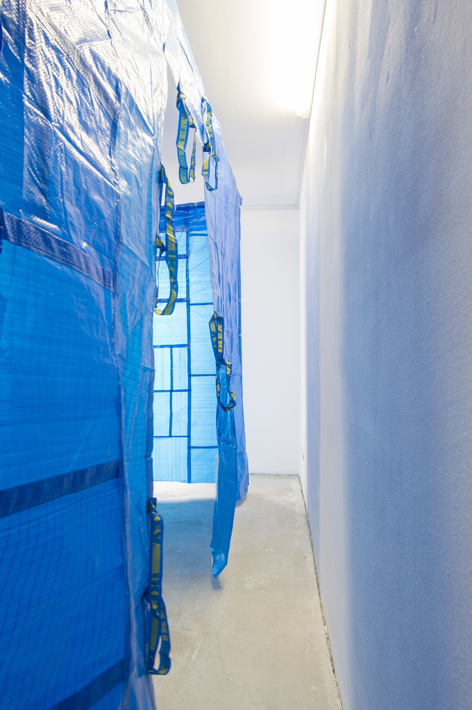
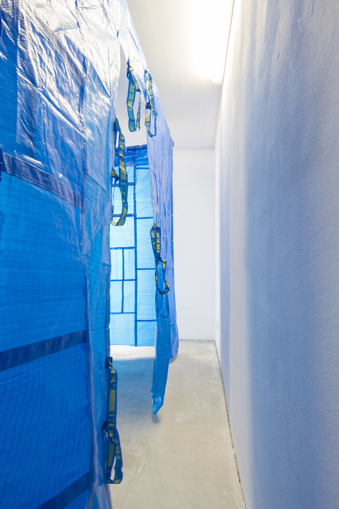
 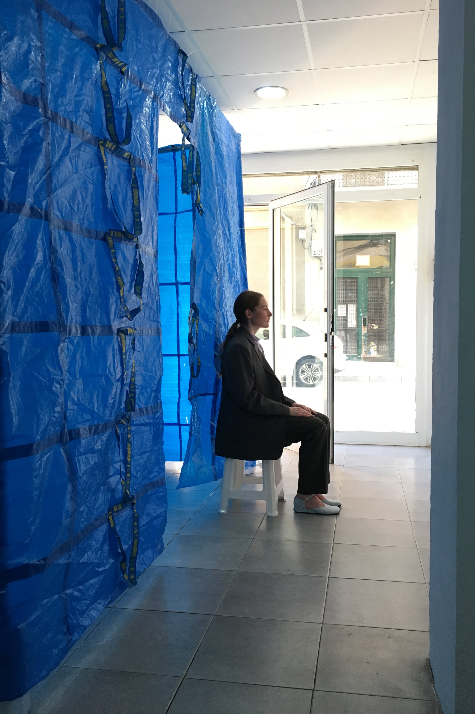
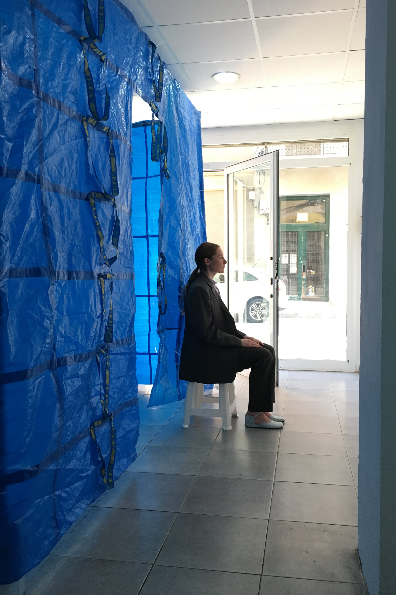
a new sound and video installation by Felix Melia. This work is produced and presented across two venues simultaneously: Jupiter Woods in London and Cordova in Vienna.
The show centers on a dialogue depicting the dissolution of a long distance relationship. It explores inherited cultural behaviors and the prescriptive narratives engendered within the environments we move through and around, and their impact on the ability of the individual to express and communicate. The architectures of the two galleries – both of which also function as domestic spaces – become the embodiments of physical and psychological distance as the conversation intensifies and the pressure of language builds around strained efforts at being ‘true to oneself’.
In the apparent absence of a body to receive them, words hang in the air, waiting for a response. The gaps are filled with more disembodied voices, their words spoken and sometimes sung – a version of ‘All of Me’ – a song about romantic devotion, the lyrics of which describe violent, physical undoing – resonates throughout both galleries. When the body is made inaccessible, obscured by representations, and images have supplanted the expression of some deeper emotional self, that self is set adrift, impossible to quantify, identify, or express in isolation. Instead, it is dispersed amongst the objects, surfaces and spaces it inhabits.
Images by Roberto Ruiz
I like you better in the pink dress. She had a lazy-lotus-eye. She waves. She cocked her head. Nonchalant. Eating pancakes with your hands. Stuffing one dollar bills into your pockets. He stared at the fruit stand. Moons and salads. Wanting to be happy. Imagine floating above the treetops. In our beautiful balloon. A unique present. Thank you again and again and again. You gave it. A sure-fire a gift. A real dad. You feel familiar. You enter a gentle curvy bend. You swing hard with a more forgiving club. Higher flight. He will bask. Basking. A woo woo woo opportunity presents itself. Ten months away. Goods and Services. Goods and Services. We took so many free rides to the mall. These coins were so hot. We wanted to sit. We stood instead. We shipped things. We waited for the mail. A few steps back. Water features. A continuous flow. She rushes over. She appears vulgar. A clean cut image. Meeting you in 15 min. Waiting for the time to pass. Waiting for the day to end. Clipping your loose nose hairs. Having a cocktail or a beer with parm encrusted chicken, baked. Sharing tacos with your boyfriend. That’s terrific, how shall we do this? She was an animal. Denis pauses dramatically. One of them was named Denis. It was her very stable younger brother. She wasn’t really sure about his love life. No sex. Well yes but no. Laughing laughing laughing. Birds land on your shoulder. Killing time. Laying on the floor next to a stuffed animal. Letting your hair get greasy. Dying you hair. Ordering coke with ice. Living longer then you can afford. Burying your hamster in the yard. Digging it up. Looking at it. Eating pie surrounded by fish tanks. Some very long years. Laying in the dark staring at the picture frames beside your bed. Something pressing against your leg. A duck. Do you have money for food? Do you have a tender lover? He dresses like this. Dear everybody. Dear everybody, but no one was listening. You’re standing next to a shitty red car, wearing sandals. You paint your toes.
Facing the elements. The stench of summer trash melting - in this city. She was having a life. Being safe. No music. No fish. No profits. He had a bed. With real benefits. He had a bed, unless we gave it away.
Bring a mop for the broken toilet. Be a ghost. Your cart is bursting. Momma! Momma! A nod and then a shrug. Trying to remain calm. Trying to look serious and older. Licking your lips. A little praise for a better life. Frantically wiping away moisture around your eyes. Head in the cloud. Freshly cut grass. Mosquitoes buzzing towards skin. Being different from us. “Us”. Having sex in a parking lot, with the windows open. Stars. Principals. Proper names. A useless dinner ethos. Wearing baggy pants. Toothless man. Shirt tails flying out the sides.
HULLABALOO
2017
Suitcase, Chinese lucky cats, plastic bowl, sand, gold coins, cigarette butts
Lazy blind eyes
2017
Lounge cushion, dog chew toys, scented dog waste bag, painted towel, paint, pastel
Titty Dress
2017
Painted beach dress, rope
Untitled (Wall Drawings)
2017
Pastel & pencil
Images by Roberto Ruiz

Foyer
Arguments
Onyeka Igwe, Ed Lehan, Georgie Nettell
Paint
Arguments
Onyeka Igwe, Ed Lehan
HD Video, silent.
Distorted Thinking
Georgie Nettell
Colour Wave Print
Gallery
Negative Escalation
Georgie Nettell
Colour Wave Print.w
Binary Opposition
Georgie Nettell
Colour Wave Print.
Arguments
Onyeka Igwe, Ed Lehan
HD Video, silent.
Irreconcilable Differences
Georgie Nettell
Colour Wave Print.
Arguments
Onyeka Igwe, Ed Lehan
HD Video, silent.
Kitchen
Legitimate Rage
Georgie Nettell
Colour Wave Print.
Images by Roberto Ruiz
 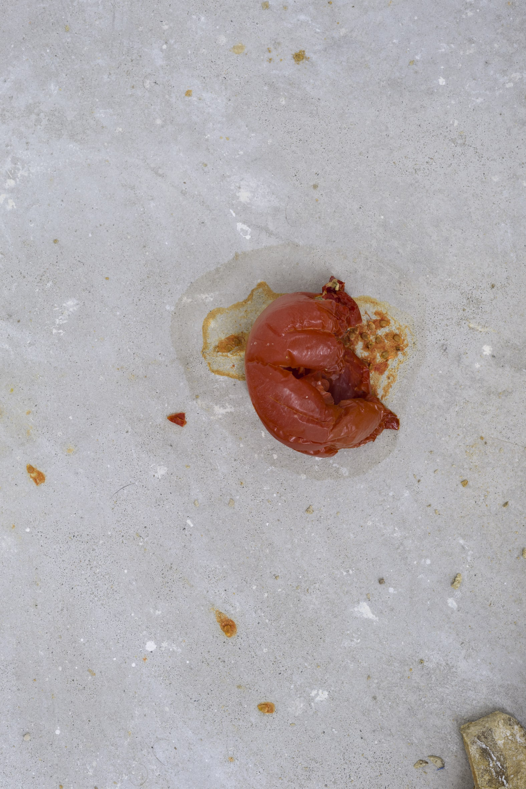
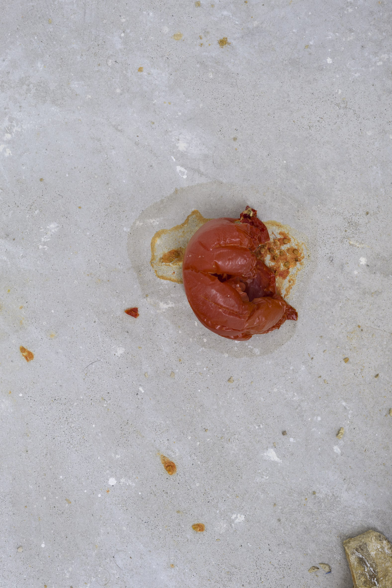

CREATOR(s)
The termite mound is collectively built. The termites return to their hive after feeding with their intestines full of grass and wood; their excrement is then assembled, in a joint effort with the other termites, to make the basis of their living structure. Once the feces has been processed and chewed and put into place the termites seed the walls with a fungus that grows and connects the segments, filling the gaps and adhering the sections together like a mortar between bricks. The termites’ process of consumption is directly proportional to the process of construction thus the mound is an inhabitable embodiment of a portion of the survival cycle and functions for the termites as both process and form.
After fertilization, a pregnant mother’s body similarly becomes both a home and source of life. The body is the form through which the baby is nourished and sustained. The body, the womb, the breasts, the cervix adapt and expand in order firstly to accommodate and feed during pregnancy and then secondly to give birth and sustain life afterwards. All of the actions of consumption and recovery that were once solely owned by the mother – eating, sleeping, drinking etc. – now become, at least partially, in service of something(one) else: the unborn and born child and the body as home and provider. The terms that were individual become plural.
DESTROYER(s)
As resilient and condensed as the mound is, these structures are extremely susceptible to rain and can – during a heavy downpour – be destroyed within minutes. Paradoxically the termites’ vitality and the stability of the mound's construction are also dependent on the same rain.
Once the child is born, the mother’s process of decision-making and her mobility and sense of autonomy, all of which were once,, like her consumption, ostensibly individual endeavors, become shared. Forever changed, now no longer I but we; together they begin the process of dependency and (mutual) negotiation. The child demands an insatiable amount of the mother in order for it to constitute itself. The mother must come to terms with an absolution of a sense of herself in service of the establishment of someone else.
NEWS FROM NOWHERE
News From Nowhere is a built environment that addresses this paradoxical condition, and the struggle between making and undoing. Jones delimits this site through a triangulation of: a declarative written word ‘Yalancılar’ (Turkish for liars) registered legible from the outside balcony, an elongated undulating sandcastle structure, and the remnants of upheaval, thrown stones and smashed tomatoes. Jones materially and conceptually references both the construction of the termite mound and the process of mothering; the former as a stand in for the city and the universally experienced process of living together, and the later an acutely personally process, identifiable to some (mothers) first hand and others only by proxy. This diorama operates through a shift in scale, and the room holds the citadel and (like and the mound or the womb) it expands, develops and swells and is put in direct contact with the violence of upheaval (the rain the destruction of self). The work advocates for a utopic stability born out of agitation and instability; the moment when the space is dismantled and pulled open wide enough allow what we want to have happen, to happen.
Some of the towers will need to be rebuilt at times. Giant Sequoias require heat from fire to regenerate.
Images by Roberto Ruiz